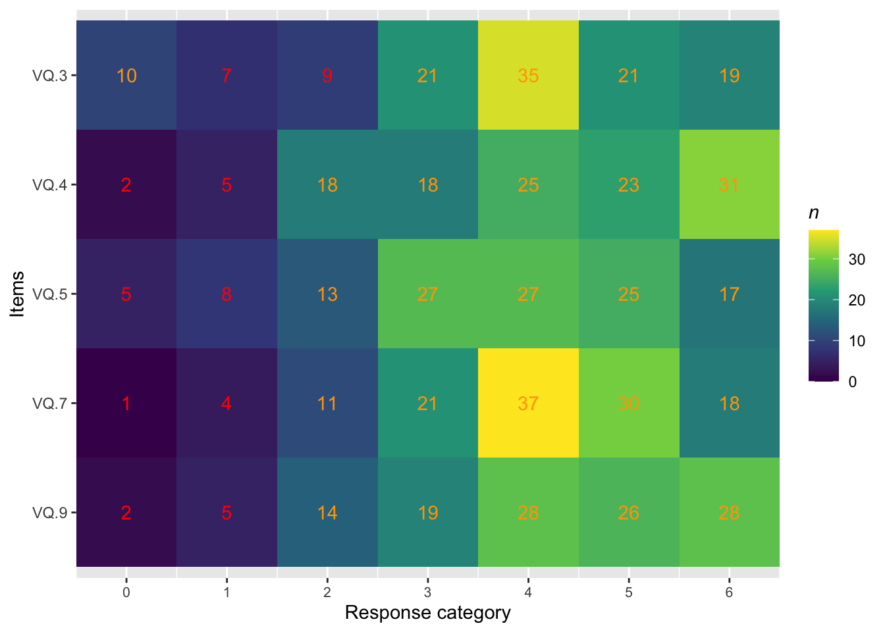
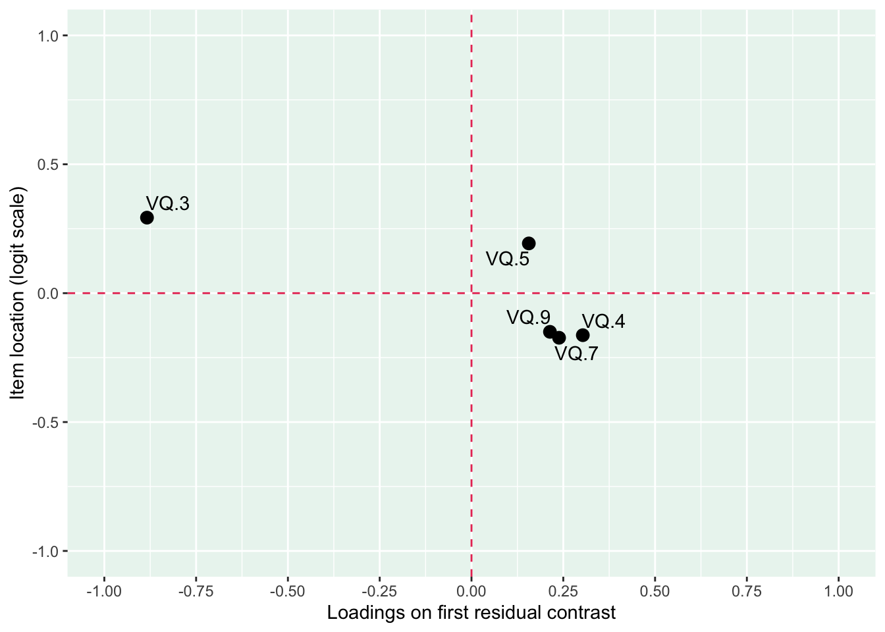
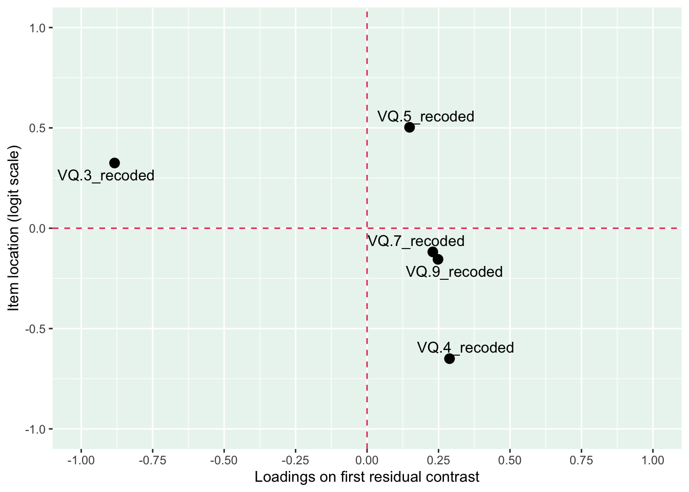
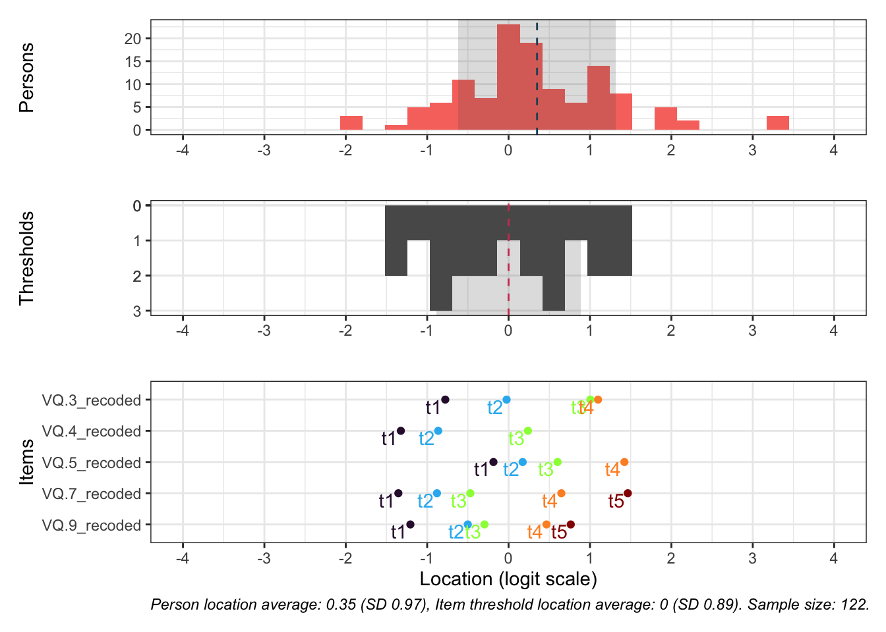
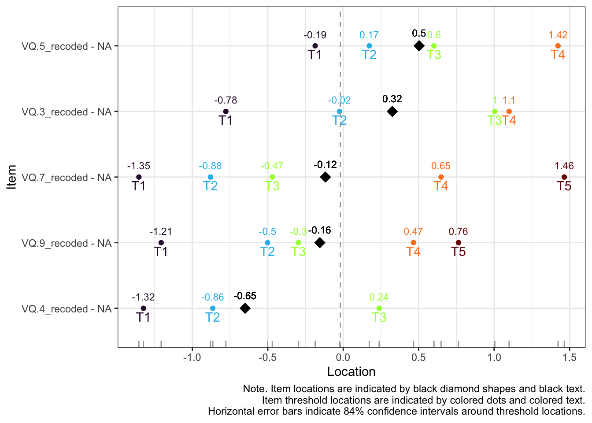
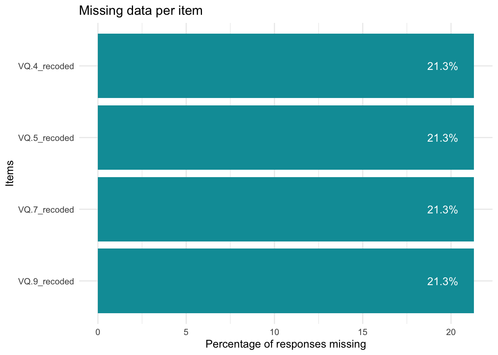
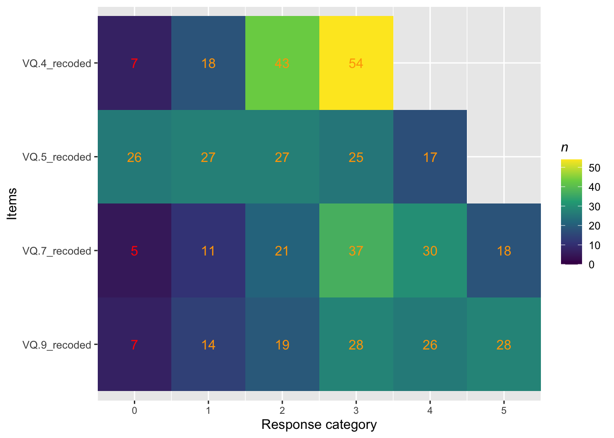
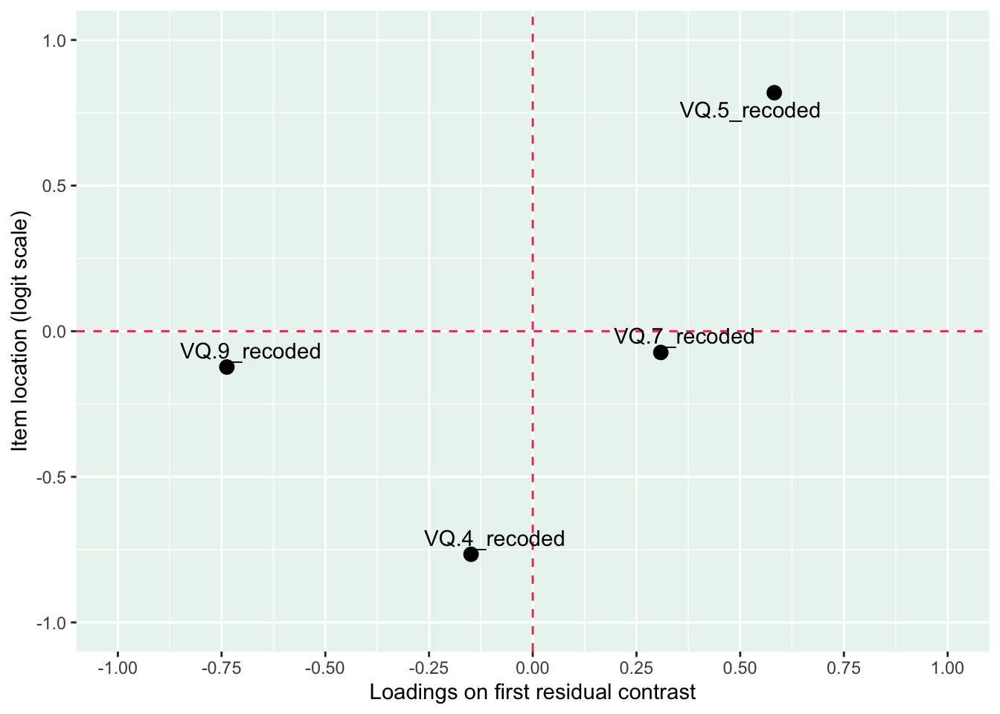
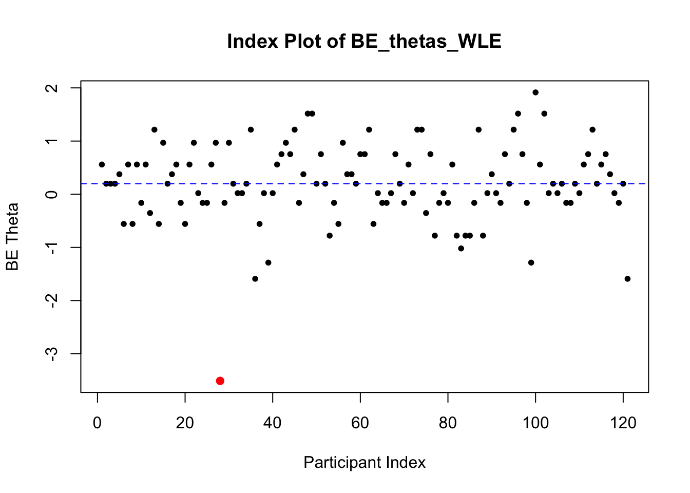
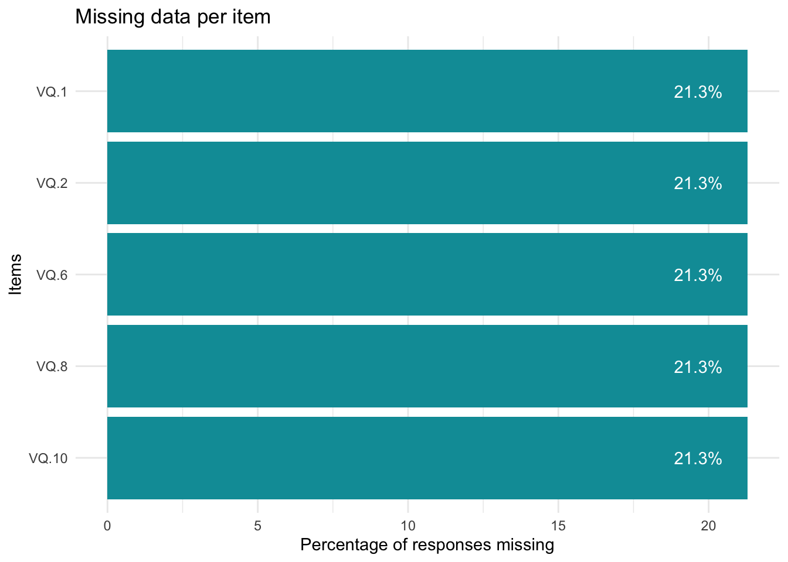

5.1 Valuing Questionnaire (VQ): Rasch analysis and BEA validity investigation
The Valuing Questionnaire (VQ) instrument is used as part of the validity investigation of BEA. The original VQ study (Smout et al., 2014) states that the scale has two dimensions: (A) progress in valued living (items 3, 4, 5, 7, 9), and (B) obstruction to valued living (items 1, 2, 6, 8, 10). VQ_progress and VQ_obstruction are therefore analyzed separate with Rasch analysis. Validity analyses by correlations of thetas (BEA and VQ_progress, and BEA and VQ_obstruction respectively) will be undertaken. Lastly, partial correlations were conducted to examine the association between BEA and VQ sub-scales, while controlling for the shared variance among the sub-scales. Note that VQ was not completed by the participants from the intervention study (Hockeystudien), therefore more missing values than in the BEA Rasch analysis are to be expected.
Code
itemlabels<-data.frame(itemnr =c("item1", "item2", "item3", "item4", "item5", "item6", "item7", "item8", "item9", "item10"), item =c("I spent a lot of time thinking about the past or future, rather than being engaged in activities that mattered to me","I was basically on“auto-pilot” most of the time","I worked toward my goals even if I didn’t feel motivated to","I was proud about how I lived my life","I made progress in the areas of my life I care most about","Difficult thoughts, feelings or memories got in the way of what I really wanted to do","I continued to get better at being the kind of person I want to be","When things didn’t go according to plan, I gave up easily","I felt like I had a purpose in life","It seemed like I was just“going through the motions” rather than focusing on what was important to me"))RIlistitems(itemlabels, all.items =TRUE)
itemnr
item
item1
I spent a lot of time thinking about the past or future, rather than being engaged in activities that mattered to me
item2
I was basically on“auto-pilot” most of the time
item3
I worked toward my goals even if I didn’t feel motivated to
item4
I was proud about how I lived my life
item5
I made progress in the areas of my life I care most about
item6
Difficult thoughts, feelings or memories got in the way of what I really wanted to do
item7
I continued to get better at being the kind of person I want to be
item8
When things didn’t go according to plan, I gave up easily
item9
I felt like I had a purpose in life
item10
It seemed like I was just“going through the motions” rather than focusing on what was important to me
5.2 Data preparation
The following data preparations are the basis for all analyses related to the Bulls Eye for Athletes (BEA) study. Code for scale step alterations and some of the modified data frames are presented next to their related sub-analysis to make the workflow more comprehensible.
#loading bulls eye for athletes datasetBullsEye_merged_data_final_without_comp_level<-read_excel("BullsEye_merged_data_final.xlsx")rename<-dplyr::rename#renaming bulls eye items from Swedish to EnglishBullsEye_merged_data_final_without_comp_level<-BullsEye_merged_data_final_without_comp_level%>%rename( BE_Competition =BE_Tavling, BE_Training =BE_Traning, BE_PreparationRecovery =BE_Forberedelser, BE_Life =BE_Livet, BE_Obstacles_Sport =BE_Hinder_Idrotten, BE_Obstacles_Life =BE_Hinder_Livet, BE_Competition_test2 =BE_Tavling_test2, BE_Training_test2 =BE_Traning_test2, BE_PreparationRecovery_test2 =BE_Forberedelser_test2, BE_Life_test2 =BE_Livet_test2, BE_Obstacles_Sport_test2 =BE_Hinder_Idrotten_test2, BE_Obstacles_Life_test2 =BE_Hinder_Livet_test2)#adding competition levelcomp_level_BE<-read_excel("comp_level_bulls eye.xlsx")BullsEye_merged_data_final<-full_join(BullsEye_merged_data_final_without_comp_level,comp_level_BE, by ="Användarnamn")#data corrections for BullsEye_merged_data_final#age reported as year of birthBullsEye_merged_data_final$Demografi.Alder[BullsEye_merged_data_final$Användarnamn=="1054fmsc"&BullsEye_merged_data_final$Demografi.Alder==95]<-24BullsEye_merged_data_final$Demografi.Alder[BullsEye_merged_data_final$Användarnamn=="1180smpq"&BullsEye_merged_data_final$Demografi.Alder==91]<-28BullsEye_merged_data_final$Demografi.Alder[BullsEye_merged_data_final$Användarnamn=="1183qhst"&BullsEye_merged_data_final$Demografi.Alder==93]<-26#participant stopped practice sport by test2 so values at test2 therefore not includedvariables_to_na_1086fcfd<-c("BE_Competition_test2","BE_Training_test2","BE_PreparationRecovery_test2","BE_Life_test2","BE_Obstacles_Sport_test2","BE_Obstacles_Life_test2","SMS-2.1_test2","SMS-2.2_test2","SMS-2.3_test2","SMS-2.4_test2","SMS-2.5_test2","SMS-2.6_test2","SMS-2.7_test2","SMS-2.8_test2","SMS-2.9_test2","SMS-2.10_test2","SMS-2.11_test2","SMS-2.12_test2","SMS-2.13_test2","SMS-2.14_test2","SMS-2.15_test2","SMS-2.16_test2","SMS-2.17_test2","SMS-2.18_test2")BullsEye_merged_data_final[BullsEye_merged_data_final$Användarnamn=="1086fcfd", variables_to_na_1086fcfd]<-NA#rename Valuing Questionnaire items abbrevation from VLQ to VQBullsEye_merged_data_final<-BullsEye_merged_data_final%>%rename_with(~gsub("^VLQ", "VQ", .), starts_with("VLQ"))#rename SMS-2 variablesnames(BullsEye_merged_data_final)<-gsub("SMS-2\\.", "SMS_2_", names(BullsEye_merged_data_final))#rename CSAI-2R variablesnames(BullsEye_merged_data_final)<-gsub("CSAI-2R\\.", "CSAI_2R_", names(BullsEye_merged_data_final))#create date and time difference variables, for survey 1 and survey 2# Ensure the variables are in POSIXct formatBullsEye_merged_data_final$Färdig_surveys_test1<-as.POSIXct(BullsEye_merged_data_final$Färdig_surveys_test1, format ="%Y-%m-%d %H:%M")BullsEye_merged_data_final$Färdig_surveys_test2<-as.POSIXct(BullsEye_merged_data_final$Färdig_surveys_test2, format ="%Y-%m-%d %H:%M")# Calculate the time difference in hours (for survey 1 and survey 2)BullsEye_merged_data_final$time_latency_survey_1_2_hours<-as.numeric(difftime(BullsEye_merged_data_final$Färdig_surveys_test2,BullsEye_merged_data_final$Färdig_surveys_test1, units ="hours"))# Calculate the time difference in days (for survey 1 and survey 2)BullsEye_merged_data_final$time_latency_survey_1_2_days<-as.numeric(difftime(BullsEye_merged_data_final$Färdig_surveys_test2,BullsEye_merged_data_final$Färdig_surveys_test1, units ="days"))#create date and time difference variables, for survey 1 and bulls eye 1# Ensure the variables are in POSIXct formatBullsEye_merged_data_final$Färdig_surveys_test1<-as.POSIXct(BullsEye_merged_data_final$Färdig_surveys_test1, format ="%Y-%m-%d %H:%M")BullsEye_merged_data_final$Skapat<-as.POSIXct(BullsEye_merged_data_final$Skapat, format ="%Y-%m-%d %H:%M:%S")# Calculate the time difference in hours (for survey 1 and bulls eye 1)BullsEye_merged_data_final$time_latency_survey1_bulls_eye1_hours<-as.numeric(difftime(BullsEye_merged_data_final$Skapat,BullsEye_merged_data_final$Färdig_surveys_test1, units ="hours"))# Calculate the time difference in days (for survey 1 and bulls eye 1)BullsEye_merged_data_final$time_latency_survey1_bulls_eye1_days<-as.numeric(difftime(BullsEye_merged_data_final$Skapat,BullsEye_merged_data_final$Färdig_surveys_test1, units ="days"))#create date and time difference variables, for bulls eye 1 and bulls eye 2# Ensure the variables are in POSIXct formatBullsEye_merged_data_final$Skapat<-as.POSIXct(BullsEye_merged_data_final$Skapat, format ="%Y-%m-%d %H:%M:%S")BullsEye_merged_data_final$Skapat_test2<-as.POSIXct(BullsEye_merged_data_final$Skapat_test2, format ="%Y-%m-%d %H:%M:%S")# Calculate the time difference in hours (for bulls eye 1 and bulls eye 2)BullsEye_merged_data_final$time_latency_bulls_eye1_2_hours<-as.numeric(difftime(BullsEye_merged_data_final$Skapat_test2,BullsEye_merged_data_final$Skapat, units ="hours"))# Calculate the time difference in days (for bulls eye 1 and bulls eye 2)BullsEye_merged_data_final$time_latency_bulls_eye1_2_days<-as.numeric(difftime(BullsEye_merged_data_final$Skapat_test2,BullsEye_merged_data_final$Skapat, units ="days"))#have checked and all date and time variables are correct filter<-dplyr::filter#hockeystudien bulls eye data:sheet1<-read_excel("hockeystudien intervention_bulls eye.xlsx", sheet =1)sheet1_filtered<-sheet1%>%filter(`Instansens namn`=="Vecka 1")%>%distinct(`Användarnamn`, .keep_all =TRUE)sheet2<-read_excel("hockeystudien intervention_bulls eye.xlsx", sheet =2)sheet2_filtered<-sheet2%>%filter(`Instansens namn`=="Vecka 1")%>%distinct(`Användarnamn`, .keep_all =TRUE)merged_data_hockeystudien_BE<-full_join(sheet1_filtered, sheet2_filtered, by ="Användarnamn")#hockeystudien demographicshockeystudien_intervention_demographics<-read_excel("hockeystudien intervention_demographics.xlsx", sheet =1)#corecting age for a participant in the dfhockeystudien_intervention_demographics$Demografi.Alder[hockeystudien_intervention_demographics$Användarnamn=="1077dhrv"&hockeystudien_intervention_demographics$Demografi.Alder==6]<-26#merge df BE and demographics from hockeystudienmerged_data_hockeystudien_BE_demographics<-full_join(merged_data_hockeystudien_BE,hockeystudien_intervention_demographics, by ="Användarnamn")#following in the hockeystudien study already exists in the bulls eye study, therefore mask:#mask 1029spns, 1061bgmb, 1043gsnq, 1046pkbz, 1062xhqd, 1070mfqq#1073znwk is also masked due to not completing the dart board ratings in BEA (only other parts of BEA) and therefore not contributing with any values for the statistical analysesusernames_to_exclude<-c("1029spns","1061bgmb","1043gsnq","1046pkbz","1062xhqd","1070mfqq","1073znwk")filtered_data<-merged_data_hockeystudien_BE_demographics%>%filter(!(`Användarnamn`%in%usernames_to_exclude))hockeystudien_bulls_eye_modified_data<-filtered_data%>%mutate(`Användarnamn` =paste0(`Användarnamn`, "_hockeystudien"))%>%# Append "_hockeystudien" to each valuerename( BE_Competition =Tavling, BE_Training =Traning, BE_PreparationRecovery =Forberedelser, BE_Life =Livet, BE_Obstacles_Sport =HinderSkala1, BE_Obstacles_Life =HinderSkala2)#preparations for merging datasets into superfinal version (bulls eye + hockeystudien_bulls eye)hockeystudien_bulls_eye_modified_data<-hockeystudien_bulls_eye_modified_data%>%mutate(from_hockeystudien =1)BullsEye_merged_data_final<-BullsEye_merged_data_final%>%mutate(from_hockeystudien =0)bulls_eye_merged_superfinal_data<-bind_rows(hockeystudien_bulls_eye_modified_data,BullsEye_merged_data_final)#use for analyses#BE items (dartboard), adjust (-1) to enable Rasch analysisBE_adjust<-c("BE_Competition","BE_Training","BE_PreparationRecovery","BE_Life","BE_Competition_test2","BE_Training_test2","BE_PreparationRecovery_test2","BE_Life_test2")bulls_eye_merged_superfinal_data[, BE_adjust]<-lapply(bulls_eye_merged_superfinal_data[, BE_adjust], function(x)x-1)#"Hinder", reverse items (low value = low in values-based living and compatible with other values items) and adjust (-1) to enable Rasch analysisHinder_reverse_and_adjust<-c("BE_Obstacles_Sport","BE_Obstacles_Life","BE_Obstacles_Sport_test2","BE_Obstacles_Life_test2")bulls_eye_merged_superfinal_data[, Hinder_reverse_and_adjust]<-lapply(bulls_eye_merged_superfinal_data[, Hinder_reverse_and_adjust], function(x)8-x-1)#ADAQ, adjust (-1) to enable Rasch analysisADAQ_adjust<-c("ADAQ.1","ADAQ.2","ADAQ.3","ADAQ.4","ADAQ.5","ADAQ.6","ADAQ.7")bulls_eye_merged_superfinal_data[, ADAQ_adjust]<-lapply(bulls_eye_merged_superfinal_data[, ADAQ_adjust], function(x)x-1)#SWLS, adjust (-1) to enable Rasch analysisSWLS_adjust<-c("SWLS.1", "SWLS.2", "SWLS.3", "SWLS.4", "SWLS.5")bulls_eye_merged_superfinal_data[, SWLS_adjust]<-lapply(bulls_eye_merged_superfinal_data[, SWLS_adjust], function(x)x-1)#VQ adjustments#some items were reversed in the scoring when exporting data from the web platform, but no items should be reversed in VQ when using each subscale separately. Some items were therefore reversed back.#items 1, 2, 6, 8, 10 (the VQ obstruction subscale) were reversed in the scoring and needs to be reversed back.#VQ already starts at zero and does therefore not need to be adjusted prior to Rasch analysis.bulls_eye_merged_superfinal_data<-bulls_eye_merged_superfinal_data%>%mutate(across(c("VQ.1", "VQ.2", "VQ.6", "VQ.8", "VQ.10"), ~6-.))#SMS-2 adjustments#SMS-2 consists of 18 items and 6 sub-scales divided into the following according to Pelletier et al. (2013). Some items were reversed in the scoring when exporting data from the web platform, but no items should be reversed in SMS-2. Some items were therefore reversed back.#Intrinsic regulation: items 3, 9, 17 (none reversed = correct)#Integrated regulation: items 4, 11, 14 (none reversed = correct) #Identified regulation: items 6, 12, 18 (none reversed = correct)#Introjected regulation: items 1, 7, 16 (items 1 and 7 are reversed in the scoring and needs to be reversed back)#External regulation: items 5, 8, 15 (items 5 and 8 are reversed in the scoring and needs to be reversed back)#Amotivated regulation: 2, 10, 13 (items 2, 10 and 13 are reversed in the scoring and needs to be reversed back)#(back) reverse scoring for items 1, 7, 5, 8, 2, 10, 13SMS2_items_to_reverse<-c("SMS_2_1", "SMS_2_7", "SMS_2_5", "SMS_2_8", "SMS_2_2", "SMS_2_10", "SMS_2_13")bulls_eye_merged_superfinal_data<-bulls_eye_merged_superfinal_data%>%mutate(across(all_of(SMS2_items_to_reverse), ~8-.))#SMS-2, adjust (-1) to enable Rasch analysisSMS2_adjust<-c("SMS_2_1","SMS_2_2","SMS_2_3","SMS_2_4","SMS_2_5","SMS_2_6","SMS_2_7","SMS_2_8","SMS_2_9","SMS_2_10","SMS_2_11","SMS_2_12","SMS_2_13","SMS_2_14","SMS_2_15","SMS_2_16","SMS_2_17","SMS_2_18")bulls_eye_merged_superfinal_data[, SMS2_adjust]<-lapply(bulls_eye_merged_superfinal_data[, SMS2_adjust], function(x)x-1)#CSAI-2R adjustments#CSAI-2R consists of 17 items and 3 sub-scales divided into the following according to Lundqvist & Hassmén (2005). Items will be renamed so they correspond to item numbers in Lundqvist & Hassmén (2005). Some items were reversed in the scoring when exporting data from the web platform (self-confidence sub-scale items), but no items needs to be reversed in CSAI-2R when looking at each sub-scale separately. Items in the self-confidence sub-scale were therefore reversed back.#items in brackets are the original item numbers found in Lundqvist & Hassmén (2005), items prior to brackets were the item numbers used on the web platform used for data collection in this study#cognitive anxiety sub-scale: items 2 (7), 5 (10), 7 (13), 9 (16), 13 (22)#somatic anxiety sub-scale: items 1 (5), 3 (8), 6 (11), 10 (17), 12 (20), 14 (23), 16 (26)#self-confidence sub-scale: items 4 (9), 8 (15), 11 (18), 15 (24), 17 (27) #rename CSAI-2R item names to correspond with Lundqvist & Hassmén (2005):item_mapping_CSAI2R<-c("CSAI_2R_1"="CSAI_2R_5","CSAI_2R_2"="CSAI_2R_7","CSAI_2R_3"="CSAI_2R_8","CSAI_2R_4"="CSAI_2R_9","CSAI_2R_5"="CSAI_2R_10","CSAI_2R_6"="CSAI_2R_11","CSAI_2R_7"="CSAI_2R_13","CSAI_2R_8"="CSAI_2R_15","CSAI_2R_9"="CSAI_2R_16","CSAI_2R_10"="CSAI_2R_17","CSAI_2R_11"="CSAI_2R_18","CSAI_2R_12"="CSAI_2R_20","CSAI_2R_13"="CSAI_2R_22","CSAI_2R_14"="CSAI_2R_23","CSAI_2R_15"="CSAI_2R_24","CSAI_2R_16"="CSAI_2R_26","CSAI_2R_17"="CSAI_2R_27")names(bulls_eye_merged_superfinal_data)<-sapply(names(bulls_eye_merged_superfinal_data),function(x)ifelse(x%in%names(item_mapping_CSAI2R), item_mapping_CSAI2R[x], x))#(back) reverse scoring for self-confidence sub-scale items 9, 15, 18, 24, 27CSAI2R_items_to_reverse<-c("CSAI_2R_9", "CSAI_2R_15", "CSAI_2R_18", "CSAI_2R_24", "CSAI_2R_27")bulls_eye_merged_superfinal_data<-bulls_eye_merged_superfinal_data%>%mutate(across(all_of(CSAI2R_items_to_reverse), ~5-.))#CSAI-2R, adjust (-1) to enable Rasch analysisCSAI2R_adjust<-c("CSAI_2R_5", "CSAI_2R_7", "CSAI_2R_8", "CSAI_2R_9", "CSAI_2R_10", "CSAI_2R_11","CSAI_2R_13", "CSAI_2R_15", "CSAI_2R_16", "CSAI_2R_17", "CSAI_2R_18", "CSAI_2R_20","CSAI_2R_22", "CSAI_2R_23", "CSAI_2R_24", "CSAI_2R_26", "CSAI_2R_27")bulls_eye_merged_superfinal_data[, CSAI2R_adjust]<-lapply(bulls_eye_merged_superfinal_data[, CSAI2R_adjust],function(x)x-1)#adding recoded bulls eye items (from the BEA Rasch analysis, needed here as the loading of data needs to be repeated for each quarto file)recode<-dplyr::recodebulls_eye_merged_superfinal_data<-bulls_eye_merged_superfinal_data%>%mutate(# Recoding BE_Competition (0+1; 2+3; 4+5) BE_Competition_recoded =recode(BE_Competition, `0` =0, `1` =0, `2` =1, `3` =1, `4` =2, `5` =2, `6` =3),# Recoding BE_Training (0+1) BE_Training_recoded =recode(BE_Training, `0` =0, `1` =0, `2` =1, `3` =2, `4` =3, `5` =4, `6` =5))
5.3 VQ_progess: Rasch analysis and BEA validity investigation
Code
itemlabels<-data.frame(itemnr =c("item3", "item4", "item5", "item7", "item9"), item =c("I worked toward my goals even if I didn’t feel motivated to","I was proud about how I lived my life","I made progress in the areas of my life I care most about","I continued to get better at being the kind of person I want to be","I felt like I had a purpose in life"))RIlistitems(itemlabels, all.items =TRUE)
itemnr
item
item3
I worked toward my goals even if I didn’t feel motivated to
item4
I was proud about how I lived my life
item5
I made progress in the areas of my life I care most about
item7
I continued to get better at being the kind of person I want to be
#preparing data frame with VQ_progress itemsVQ_progress_data_rasch<-bulls_eye_merged_superfinal_data[, c("VQ.3", "VQ.4", "VQ.5", "VQ.7", "VQ.9")]#investigate missing valuesRImissing(VQ_progress_data_rasch)
Code
#removing missing values #in practice this means removing participants from the intervention study (Hockeystudien) that did not complete VQVQ_progress_data_rasch_na_omit<-VQ_progress_data_rasch%>%select(VQ.3,VQ.4,VQ.5,VQ.7,VQ.9)%>%na.omit()RImissing(VQ_progress_data_rasch_na_omit)
[1] "No missing data."
Code
#tile plot (response category frequency for the items)RItileplot(VQ_progress_data_rasch_na_omit)

Code
#conditional likelihood ratio tests (CLR)#a test of homogeneity that assesses whether item parameters are homogeneous across all levels of theta clr_tests(VQ_progress_data_rasch_na_omit, model ="PCM")
Conditional Likelihood Ratio Tests:
clr df pvalue sig
overall 61.4 29 0.00042 ***
Code
#conditional item fit (assessing unidimensionaliity)simfit1_VQ_progress<-RIgetfit(VQ_progress_data_rasch_na_omit, iterations =100, cpu =10)RIitemfit(VQ_progress_data_rasch_na_omit, simfit1_VQ_progress, cutoff =c(0.005, 0.995))
Item
InfitMSQ
Infit thresholds
OutfitMSQ
Outfit thresholds
Infit diff
Outfit diff
Relative location
VQ.3
2.058
[0.777, 1.222]
2.519
[0.781, 1.234]
0.836
1.285
-0.26
VQ.4
0.818
[0.807, 1.291]
0.757
[0.739, 1.258]
no misfit
no misfit
-0.72
VQ.5
0.731
[0.762, 1.254]
0.764
[0.77, 1.288]
0.031
0.006
-0.37
VQ.7
0.698
[0.791, 1.241]
0.72
[0.783, 1.254]
0.093
0.063
-0.75
VQ.9
0.777
[0.773, 1.283]
0.812
[0.801, 1.296]
no misfit
no misfit
-0.71
Note:
MSQ values based on conditional calculations (n = 122 complete cases). Simulation based thresholds from 60 simulated datasets.
#loadings on the first residual contrast (assessing clusters in data or multidimensionality)RIloadLoc(VQ_progress_data_rasch_na_omit)

Code
#residual correlationsresid_cor_VQ_progress<-RIgetResidCor(VQ_progress_data_rasch_na_omit, iterations =800, cpu =10)RIresidcorr(VQ_progress_data_rasch_na_omit, cutoff =resid_cor_VQ_progress$p99)
VQ.3
VQ.4
VQ.5
VQ.7
VQ.9
VQ.3
VQ.4
-0.6
VQ.5
-0.35
-0.07
VQ.7
-0.4
0.22
0.1
VQ.9
-0.41
0.14
-0.02
-0.08
Note:
Relative cut-off value is 0.146, which is 0.293 above the average correlation (-0.146). Correlations above the cut-off are highlighted in red text.
Code
#partial gamma coefficients (assessing local independence)clean_names<-janitor::clean_namesfilter<-dplyr::filterRIpartgamLD(VQ_progress_data_rasch_na_omit)#shows only significant results
Item 1
Item 2
Partial gamma
SE
Lower CI
Upper CI
Adjusted p-value (BH)
VQ.7
VQ.4
0.391
0.128
0.141
0.642
0.044
VQ.7
VQ.5
0.368
0.108
0.156
0.580
0.013
Code
partgam_LD(as.data.frame(VQ_progress_data_rasch_na_omit))#shows all output, also non-significant results
#note: response categories have been analyzed using RIitemCats() function (in the easyRasch package) that estimates ICC plots using the eRm package. When there are response categories with fewer than 3 responses the easyRasch package uses estimation from the mirt package instead in the RIitemparams() and RItargeting() functions, and explain potential slight variations found in those outputs compared to the RIitemCats output. For transparency, ICC plots from the mirt package are therefore also displayed. Response category analysis was however consequently conducted using the RIitemCats() function that uses estimation from the eRm package.
Code
#analysis of reliability with Test Information Function (TIF)#first output shows without sample PSI and second output with sample PSI RItif(na.omit(VQ_progress_data_rasch_na_omit))
Based on the analysis of the response categories and threshold locations, scale steps were merged and recoded so that each kept scale step had the highest response probability at some point on the person location scale, and also so that all threshold locations were in the right order for all items. Recoded items were given new names with the abbreviation “_recoded”.
#preparing items for VQ_progress recodedVQ_progress_data_rasch_recoded<-bulls_eye_merged_superfinal_data[, c("VQ.3_recoded","VQ.4_recoded","VQ.5_recoded","VQ.7_recoded","VQ.9_recoded")]#investigate missing valuesRImissing(VQ_progress_data_rasch_recoded)
Code
#removing missing values #in practice this means removing participants from the intervention study (Hockeystudien) that did not complete VQVQ_progress_data_rasch_recoded_na_omit<-VQ_progress_data_rasch_recoded%>%select(VQ.3_recoded,VQ.4_recoded,VQ.5_recoded,VQ.7_recoded,VQ.9_recoded)%>%na.omit()RImissing(VQ_progress_data_rasch_recoded_na_omit)
[1] "No missing data."
Code
#re-analysis of response categories using VQ_progress recodedRIitemCats(VQ_progress_data_rasch_recoded_na_omit, items ="all", xlims =c(-5, 5), legend ="left")
#note: response categories have been analyzed using RIitemCats() function (in the easyRasch package) that estimates ICC plots using the eRm package. When there are response categories with fewer than 3 responses the easyRasch package uses estimation from the mirt package instead in the RIitemparams() and RItargeting() functions, and explain potential slight variations found in those outputs compared to the RIitemCats output. For transparency, ICC plots from the mirt package are therefore also displayed. Response category analysis was however consequently conducted using the RIitemCats() function that uses estimation from the eRm package.
Code
#tile plot (response category frequency for the items)RItileplot(VQ_progress_data_rasch_recoded_na_omit)
Code
#conditional likelihood ratio tests (CLR)#a test of homogeneity that assesses whether item parameters are homogeneous across all levels of theta clr_tests(VQ_progress_data_rasch_recoded_na_omit, model ="PCM")
Conditional Likelihood Ratio Tests:
clr df pvalue sig
overall 40.8 20 0.004 **
Code
#re-analysis of conditional item fit (assessing unidimensionality)simfit1_VQ_progress_recoded<-RIgetfit(VQ_progress_data_rasch_recoded_na_omit, iterations =100, cpu =10)RIitemfit(VQ_progress_data_rasch_recoded_na_omit, simfit1_VQ_progress_recoded, cutoff =c(0.005, 0.995))
Item
InfitMSQ
Infit thresholds
OutfitMSQ
Outfit thresholds
Infit diff
Outfit diff
Relative location
VQ.3_recoded
1.821
[0.778, 1.273]
1.898
[0.77, 1.281]
0.548
0.617
-0.02
VQ.4_recoded
0.721
[0.785, 1.216]
0.657
[0.788, 1.316]
0.064
0.131
-1.00
VQ.5_recoded
0.804
[0.782, 1.237]
0.804
[0.735, 1.295]
no misfit
no misfit
0.15
VQ.7_recoded
0.762
[0.819, 1.289]
0.768
[0.809, 1.28]
0.057
0.041
-0.47
VQ.9_recoded
0.947
[0.752, 1.227]
0.944
[0.76, 1.277]
no misfit
no misfit
-0.50
Note:
MSQ values based on conditional calculations (n = 122 complete cases). Simulation based thresholds from 100 simulated datasets.
#re-analysis of item restscoresRIrestscore(VQ_progress_data_rasch_recoded_na_omit)
Item
Observed value
Model expected value
Absolute difference
Adjusted p-value (BH)
Statistical significance level
Location
Relative location
VQ.3_recoded
0.13
0.48
0.35
0.000
***
0.32
-0.02
VQ.4_recoded
0.66
0.43
0.23
0.000
***
-0.65
-1.00
VQ.5_recoded
0.61
0.48
0.13
0.043
*
0.50
0.15
VQ.7_recoded
0.61
0.48
0.13
0.023
*
-0.12
-0.47
VQ.9_recoded
0.55
0.49
0.06
0.404
-0.16
-0.50
Code
#re-analysis of loadings on the first residual contrast (assessing clusters in data or multidimensionality)RIloadLoc(VQ_progress_data_rasch_recoded_na_omit)

Code
#re-analysis of residual correlationsresid_cor_VQ_progress_recoded<-RIgetResidCor(VQ_progress_data_rasch_recoded_na_omit, iterations =800, cpu =10)RIresidcorr(VQ_progress_data_rasch_recoded_na_omit, cutoff =resid_cor_VQ_progress_recoded$p99)
VQ.3_recoded
VQ.4_recoded
VQ.5_recoded
VQ.7_recoded
VQ.9_recoded
VQ.3_recoded
VQ.4_recoded
-0.46
VQ.5_recoded
-0.3
-0.06
VQ.7_recoded
-0.39
0.2
0.04
VQ.9_recoded
-0.41
0.13
-0.19
-0.2
Note:
Relative cut-off value is 0.145, which is 0.309 above the average correlation (-0.164). Correlations above the cut-off are highlighted in red text.
Code
#re-analysis of partial gamma coefficients (assessing local independence)RIpartgamLD(VQ_progress_data_rasch_recoded_na_omit)#shows only significant results
Item 1
Item 2
Partial gamma
SE
Lower CI
Upper CI
Adjusted p-value (BH)
VQ.4_recoded
VQ.7_recoded
0.566
0.126
0.320
0.812
0.000
VQ.4_recoded
VQ.9_recoded
0.431
0.130
0.176
0.686
0.018
Code
partgam_LD(as.data.frame(VQ_progress_data_rasch_recoded_na_omit))#shows all output, also non-significant results
#re-analysis of targetingRItargeting(VQ_progress_data_rasch_recoded_na_omit)

Code
#re-analysis of item hierarchyitemlabels<-data.frame(itemnr =names(VQ_progress_data_rasch_recoded_na_omit), item =NA)RIitemHierarchy(VQ_progress_data_rasch_recoded_na_omit)

Code
#re-analysis of threshold locations RIitemparams(VQ_progress_data_rasch_recoded_na_omit)
Threshold 1
Threshold 2
Threshold 3
Threshold 4
Threshold 5
Item location
VQ.3_recoded
-0.78
-0.02
1.00
1.10
NA
0.32
VQ.4_recoded
-1.32
-0.86
0.24
NA
NA
-0.65
VQ.5_recoded
-0.19
0.17
0.60
1.42
NA
0.5
VQ.7_recoded
-1.35
-0.88
-0.47
0.65
1.47
-0.12
VQ.9_recoded
-1.21
-0.50
-0.30
0.47
0.76
-0.16
Note:
Item location is the average of the thresholds for each item.
Code
#re-analysis of reliability with Test Information Function (TIF)#first output shows without sample PSI and second output with sample PSI RItif(na.omit(VQ_progress_data_rasch_recoded_na_omit))
VQ_progress recoded resulted in ordered response categories.
the conditional likelihood ratio (CLR) test is significant which indicate that item parameters may not be homogeneous across all levels of theta.
item 3 is underfit to the model (see both the conditional item fit analysis and the item restscore analysis) which indicates it does not belong to the dimension. It will therefore be removed.
item 4 is overfit to the model (see both the conditional item fit analysis and the item restscore analysis) and possibly redundant. Indications of problems with local dependence is observed with item 7 (see the residual correlation and the partial gamma coefficient analysis), and partly with item 9 (see the partial gamma coefficient analysis). Item 4 is however kept for now until a trimmed version without item 3 is analyzed.
both items 5 and 7 are borderline overfit to the model (see both the conditional item fit analysis and the item restscore analysis) and possibly redundant. The items are however also kept for now until a trimmed version without item 3 is analyzed.
performing Rasch re-analysis with a trimmed recoded VQ_progress without item 3.
5.5 Re-analysis of VQ_progress recoded and trimmed version
#preparing items in VQ_progress recoded and trimmed versionVQ_progress_data_rasch_recoded_trimmed<-bulls_eye_merged_superfinal_data[, c("VQ.4_recoded","VQ.5_recoded","VQ.7_recoded","VQ.9_recoded")]#investigate missing valuesRImissing(VQ_progress_data_rasch_recoded_trimmed)

Code
#removing missing values #in practice this means removing participants from the intervention study (Hockeystudien) that did not complete VQVQ_progress_data_rasch_recoded_trimmed_na_omit<-VQ_progress_data_rasch_recoded_trimmed%>%select(VQ.4_recoded,VQ.5_recoded,VQ.7_recoded,VQ.9_recoded)%>%na.omit()RImissing(VQ_progress_data_rasch_recoded_trimmed_na_omit)
[1] "No missing data."
Code
#tile plot (response category frequency for the items)RItileplot(VQ_progress_data_rasch_recoded_trimmed_na_omit)

Code
#conditional likelihood ratio tests (CLR)#a test of homogeneity that assesses whether item parameters are homogeneous across all levels of theta clr_tests(VQ_progress_data_rasch_recoded_trimmed_na_omit, model ="PCM")
Conditional Likelihood Ratio Tests:
clr df pvalue sig
overall 17.8 16 0.34
Code
#re-analysis of conditional item fit (assessing unidimensionaliity)simfit1_VQ_progress_recoded_trimmed<-RIgetfit(VQ_progress_data_rasch_recoded_trimmed_na_omit, iterations =100, cpu =10)RIitemfit(VQ_progress_data_rasch_recoded_trimmed_na_omit,simfit1_VQ_progress_recoded_trimmed, cutoff =c(0.005, 0.995))
Item
InfitMSQ
Infit thresholds
OutfitMSQ
Outfit thresholds
Infit diff
Outfit diff
Relative location
VQ.4_recoded
0.779
[0.777, 1.338]
0.708
[0.756, 1.35]
no misfit
0.048
-1.35
VQ.5_recoded
1.152
[0.786, 1.29]
1.125
[0.798, 1.405]
no misfit
no misfit
0.23
VQ.7_recoded
0.986
[0.802, 1.232]
0.954
[0.814, 1.212]
no misfit
no misfit
-0.66
VQ.9_recoded
1.247
[0.743, 1.195]
1.181
[0.747, 1.247]
0.052
no misfit
-0.71
Note:
MSQ values based on conditional calculations (n = 122 complete cases). Simulation based thresholds from 100 simulated datasets.
[1] "Please press Zoom on the Plots window to see the plot"
Code
#re-analysis of item restscoresRIrestscore(VQ_progress_data_rasch_recoded_trimmed_na_omit)
Item
Observed value
Model expected value
Absolute difference
Adjusted p-value (BH)
Statistical significance level
Location
Relative location
VQ.4_recoded
0.73
0.60
0.13
0.059
.
-0.77
-1.35
VQ.5_recoded
0.61
0.63
0.02
0.701
0.82
0.23
VQ.7_recoded
0.66
0.63
0.03
0.670
-0.07
-0.66
VQ.9_recoded
0.58
0.64
0.06
0.670
-0.12
-0.71
Code
#re-analysis of loadings on the first residual contrast (assessing clusters in data or multidimensionality)RIloadLoc(VQ_progress_data_rasch_recoded_trimmed_na_omit)

Code
#re-analysis of residual correlationsresid_cor_VQ_progress_recoded_trimmed<-RIgetResidCor(VQ_progress_data_rasch_recoded_trimmed_na_omit, iterations =800, cpu =10)RIresidcorr(VQ_progress_data_rasch_recoded_trimmed_na_omit, cutoff =resid_cor_VQ_progress_recoded_trimmed$p99)
VQ.4_recoded
VQ.5_recoded
VQ.7_recoded
VQ.9_recoded
VQ.4_recoded
VQ.5_recoded
-0.33
VQ.7_recoded
-0.05
-0.19
VQ.9_recoded
-0.13
-0.44
-0.52
Note:
Relative cut-off value is 0.035, which is 0.312 above the average correlation (-0.276). Correlations above the cut-off are highlighted in red text.
Code
#re-analysis of partial gamma coefficients (assessing local independence)RIpartgamLD(VQ_progress_data_rasch_recoded_trimmed_na_omit)#shows only significant results
Item 1
Item 2
Partial gamma
SE
Lower CI
Upper CI
Adjusted p-value (BH)
VQ.4_recoded
VQ.7_recoded
0.41
0.143
0.130
0.690
0.049
VQ.4_recoded
VQ.9_recoded
0.4
0.133
0.138
0.662
0.033
Code
partgam_LD(as.data.frame(VQ_progress_data_rasch_recoded_trimmed_na_omit))#shows all output, also non-significant results
#note: response categories have been analyzed using RIitemCats() function (in the easyRasch package) that estimates ICC plots using the eRm package. When there are response categories with fewer than 3 responses the easyRasch package uses estimation from the mirt package instead in the RIitemparams() and RItargeting() functions, and explain potential slight variations found in those outputs compared to the RIitemCats output. For transparency, ICC plots from the mirt package are therefore also displayed. Response category analysis was however consequently conducted using the RIitemCats() function that uses estimation from the eRm package.
Code
#re-analysis of reliability with Test Information Function (TIF)#first output shows without sample PSI and second output with sample PSIRItif(na.omit(VQ_progress_data_rasch_recoded_trimmed_na_omit))
Item 4 performs better now but is still borderline overfit (see conditional item fit analysis and the item restscore analysis) and possibly redundant to the model. No major concerns about local dependence as there are no more above threshold residual correlations, although significant results were still demonstrated in the partial gamma coefficient analysis with items 7 and 9. Item 4 is however kept in the scale for the validity analysis.
Item 9 is now borderline underfit to the model (see conditional item fit analysis) which could indicate that the item does not belong to the dimension. The item is however kept in the scale for the validity analysis.
Poor reliability is demonstrated in the TIF analysis.
5.6 VQ_progress and BEA validity analysis
Validity between VQ_progress and BEA is investigated by correlation analysis. As both scales has undergone Rasch analysis, participants theta estimates (computed with weighted likelihood estimation - WLE) will be correlated, and since thetas are interval data, Pearson’s correlation is applied.
#complete cases data frame for validity analyses#removing missing values in relevant items for complete cases analysis#only BE items and one item from the other scales in the bulls eye study#is needed (in this case the SubjektivPrestation item) #this is because there are no missing values for the other scales #after the intervention study (Hockeystudien) participants have been removed#therefore this data frame will work for all validity analyses items_validity_analyses<-c("BE_Competition_recoded","BE_Training_recoded","BE_PreparationRecovery","BE_Life","SubjektivPrestation")data_complete_cases<-bulls_eye_merged_superfinal_data[complete.cases(bulls_eye_merged_superfinal_data[, items_validity_analyses]), ]#155 participants to begin with#33 participants from the intervention study (Hockeystudien) were removed (did not complete any scale beside Bulls Eye)#1 participant (not from the intervention study) who completed the other scales but not the dartboard in Bulls Eye (only other parts of BE) and were therefore removed#results in a complete cases data frame with 121 participants nrow(data_complete_cases)
[1] 121
Code
#item data framesBE_validity_analyses<-data_complete_cases[, c("BE_Competition_recoded","BE_Training_recoded","BE_PreparationRecovery","BE_Life")]VQ_progress_validity_analyses<-data_complete_cases[, c("VQ.4_recoded","VQ.5_recoded","VQ.7_recoded","VQ.9_recoded")]#extracting thetasBE_thetas<-RIestThetas(BE_validity_analyses)VQ_progress_thetas<-RIestThetas(VQ_progress_validity_analyses)#adding thetas to the data framedata_complete_cases$BE_thetas_WLE<-BE_thetas$WLEdata_complete_cases$VQ_progress_thetas_WLE<-VQ_progress_thetas$WLE
Visual inspection of potential outliers was only conducted for BEA to have the same sub-sample across validity correlation analyses. One statistical outlier was detected and marked in red in the plot below. This participant was row 28 in the data frame and will be removed in the upcoming correlation.
Code
{plot(data_complete_cases$BE_thetas_WLE, main ="Index Plot of BE_thetas_WLE", ylab ="BE Theta", xlab ="Participant Index", pch =20)abline(h =mean(data_complete_cases$BE_thetas_WLE), col ="blue", lty =2)points(28, data_complete_cases$BE_thetas_WLE[28], col ="red", pch =19)}

Code
#participant on row 28 is an outlier and therefore removedcorrelation_BE_VQ_progress<-cor_test(data_complete_cases[-28, ], x ="BE_thetas_WLE", y ="VQ_progress_thetas_WLE", method ="pearson")print(correlation_BE_VQ_progress)
Parameter1 | Parameter2 | r | 95% CI | t(118) | p
---------------------------------------------------------------------------------
BE_thetas_WLE | VQ_progress_thetas_WLE | 0.48 | [0.33, 0.61] | 5.91 | < .001***
Observations: 120
Some participants did not complete BEA and VQ during the same day as intended. Therefore, a sensitivity analysis is conducted.
Code
#creating data frame with only participants that completed Bulls Eye and the other scales during the same day#since 17 participants did not (has already been checked in a prior validity analysis), 104 participants will remain data_complete_cases_less_than_1day<-subset(data_complete_cases, time_latency_survey1_bulls_eye1_days<1)
Code
#looking only at participants who completed Bulls Eye and the other scales during the same day (N = 104)#sensitivity analysis VQ_progress and BEBE_validity_analyses_less1day<-data_complete_cases_less_than_1day[, c("BE_Competition_recoded","BE_Training_recoded","BE_PreparationRecovery","BE_Life")]VQ_progress_validity_analyses_less1day<-data_complete_cases_less_than_1day[, c("VQ.4_recoded","VQ.5_recoded","VQ.7_recoded","VQ.9_recoded")]#extracting thetasBE_thetas_less1day<-RIestThetas(BE_validity_analyses_less1day)VQ_progress_thetas_less1day<-RIestThetas(VQ_progress_validity_analyses_less1day)#adding thetas to the data framedata_complete_cases_less_than_1day$BE_thetas_less1day_WLE<-BE_thetas_less1day$WLEdata_complete_cases_less_than_1day$VQ_progress_thetas_less1day_WLE<-VQ_progress_thetas_less1day$WLE#analysis only with participants completing Bulls Eye and VQ the same day#removing the outlier, now on row 20 in the data framecorrelation_BE_VQ_progress_less1day<-cor_test(data_complete_cases_less_than_1day[-20, ], x ="BE_thetas_less1day_WLE", y ="VQ_progress_thetas_less1day_WLE", method ="pearson")print(correlation_BE_VQ_progress_less1day)
#we can also check if there is a statistically significant difference #by adding same or different day as a predictor #the outlier on row 28 in the data frame is removeddata_complete_cases_sensitivity_analysis<-data_complete_cases%>%mutate(group =factor(ifelse(time_latency_survey1_bulls_eye1_days<1,"same_day","different_day")))m0_VQ_progress<-lm(VQ_progress_thetas_WLE~BE_thetas_WLE, data =data_complete_cases_sensitivity_analysis[-28, ])m1_VQ_progress<-lm(VQ_progress_thetas_WLE~BE_thetas_WLE+group, data =data_complete_cases_sensitivity_analysis[-28, ])anova(m0_VQ_progress, m1_VQ_progress)
Analysis of Variance Table
Model 1: VQ_progress_thetas_WLE ~ BE_thetas_WLE
Model 2: VQ_progress_thetas_WLE ~ BE_thetas_WLE + group
Res.Df RSS Df Sum of Sq F Pr(>F)
1 118 212.12
2 117 210.29 1 1.8314 1.019 0.3148
Adding whether BE and VQ_progress were completed during the same day or not as a predictor did not significantly alter the results.
Now moving on to analyzing the other part of VQ, VQ_obstruction (to valued living, items 1, 2, 6, 8, 10).
5.7 VQ_obstruction: Rasch analysis and BEA validity investigation
Code
itemlabels<-data.frame(itemnr =c("item1", "item2", "item6", "item8", "item10"), item =c("I spent a lot of time thinking about the past or future, rather than being engaged in activities that mattered to me","I was basically on“auto-pilot” most of the time","Difficult thoughts, feelings or memories got in the way of what I really wanted to do","When things didn’t go according to plan, I gave up easily","It seemed like I was just“going through the motions” rather than focusing on what was important to me"))RIlistitems(itemlabels, all.items =TRUE)
itemnr
item
item1
I spent a lot of time thinking about the past or future, rather than being engaged in activities that mattered to me
item2
I was basically on“auto-pilot” most of the time
item6
Difficult thoughts, feelings or memories got in the way of what I really wanted to do
item8
When things didn’t go according to plan, I gave up easily
item10
It seemed like I was just“going through the motions” rather than focusing on what was important to me
#preparing data frame with VQ_obstruction itemsVQ_obstruction_data_rasch<-bulls_eye_merged_superfinal_data[, c("VQ.1", "VQ.2", "VQ.6", "VQ.8", "VQ.10")]#investigating missing valuesRImissing(VQ_obstruction_data_rasch)

Code
#removing missing values #in practice this means removing participants from the intervention study (Hockeystudien) that did not complete VQVQ_obstruction_data_rasch_na_omit<-VQ_obstruction_data_rasch%>%select(VQ.1, VQ.2, VQ.6, VQ.8, VQ.10)%>%na.omit()RImissing(VQ_obstruction_data_rasch_na_omit)
[1] "No missing data."
Code
#tile plot (response category frequency for the items)RItileplot(VQ_obstruction_data_rasch_na_omit)
Code
#conditional likelihood ratio tests (CLR)#a test of homogeneity that assesses whether item parameters are homogeneous across all levels of theta clr_tests(VQ_obstruction_data_rasch_na_omit, model ="PCM")
Conditional Likelihood Ratio Tests:
clr df pvalue sig
overall 32.9 29 0.28
Code
#conditional item fit (assessing unidimensionality)simfit1_VQ_obstruction<-RIgetfit(VQ_obstruction_data_rasch_na_omit, iterations =100, cpu =10)RIitemfit(VQ_obstruction_data_rasch_na_omit, simfit1_VQ_obstruction, cutoff =c(0.005, 0.995))
Item
InfitMSQ
Infit thresholds
OutfitMSQ
Outfit thresholds
Infit diff
Outfit diff
Relative location
VQ.1
0.927
[0.806, 1.225]
0.951
[0.79, 1.286]
no misfit
no misfit
0.28
VQ.2
0.981
[0.813, 1.221]
0.971
[0.854, 1.236]
no misfit
no misfit
0.42
VQ.6
0.989
[0.781, 1.2]
0.977
[0.747, 1.369]
no misfit
no misfit
0.53
VQ.8
1.038
[0.799, 1.22]
0.994
[0.8, 1.324]
no misfit
no misfit
1.10
VQ.10
1.091
[0.74, 1.261]
1.158
[0.647, 1.296]
no misfit
no misfit
0.51
Note:
MSQ values based on conditional calculations (n = 122 complete cases). Simulation based thresholds from 69 simulated datasets.
#note: response categories have been analyzed using RIitemCats() function (in the easyRasch package) that estimates ICC plots using the eRm package. When there are response categories with fewer than 3 responses the easyRasch package uses estimation from the mirt package instead in the RIitemparams() and RItargeting() functions, and explain potential slight variations found in those outputs compared to the RIitemCats output. For transparency, ICC plots from the mirt package are therefore also displayed. Response category analysis was however consequently conducted using the RIitemCats() function that uses estimation from the eRm package.
Code
#analysis of reliability with Test Information Function (TIF)#first output shows without sample PSI and second output with sample PSI RItif(na.omit(VQ_obstruction_data_rasch_na_omit))
Based on the analysis of the response categories and threshold locations, scale steps were merged and recoded so that each kept scale step had the highest response probability at some point on the person location scale, and also so that all threshold locations were in the right order for all items. Recoded items were given new names with the abbreviation “_recoded”.
#removing missing values #in practice this means removing participants from the intervention study (Hockeystudien) that did not complete VQVQ_obstruction_data_rasch_recoded_na_omit<-VQ_obstruction_data_rasch_recoded%>%select(VQ.1_recoded,VQ.2_recoded,VQ.6_recoded,VQ.8_recoded,VQ.10_recoded)%>%na.omit()RImissing(VQ_obstruction_data_rasch_recoded_na_omit)
[1] "No missing data."
Code
#re-analysis of response categories using VQ_obstruction recodedRIitemCats(VQ_obstruction_data_rasch_recoded_na_omit, items ="all", xlims =c(-5, 5), legend ="left")
#note: response categories have been analyzed using RIitemCats() function (in the easyRasch package) that estimates ICC plots using the eRm package. When there are response categories with fewer than 3 responses the easyRasch package uses estimation from the mirt package instead in the RIitemparams() and RItargeting() functions, and explain potential slight variations found in those outputs compared to the RIitemCats output. For transparency, ICC plots from the mirt package are therefore also displayed. Response category analysis was however consequently conducted using the RIitemCats() function that uses estimation from the eRm package.
Code
#tile plot (response category frequency for the items)RItileplot(VQ_obstruction_data_rasch_recoded_na_omit)
Code
#conditional likelihood ratio tests (CLR)#a test of homogeneity that assesses whether item parameters are homogeneous across all levels of theta clr_tests(VQ_obstruction_data_rasch_recoded_na_omit, model ="PCM")
Conditional Likelihood Ratio Tests:
clr df pvalue sig
overall 25.2 19 0.15
Code
#re-analysis of conditional item fit (assessing unidimensionaliity)simfit1_VQ_obstruction_recoded<-RIgetfit(VQ_obstruction_data_rasch_recoded_na_omit, iterations =100, cpu =10)RIitemfit(VQ_obstruction_data_rasch_recoded_na_omit, simfit1_VQ_obstruction_recoded, cutoff =c(0.005, 0.995))
Item
InfitMSQ
Infit thresholds
OutfitMSQ
Outfit thresholds
Infit diff
Outfit diff
Relative location
VQ.1_recoded
1.084
[0.802, 1.18]
1.003
[0.795, 1.199]
no misfit
no misfit
-0.22
VQ.2_recoded
0.97
[0.717, 1.249]
0.98
[0.696, 1.39]
no misfit
no misfit
0.46
VQ.6_recoded
0.953
[0.815, 1.288]
0.946
[0.795, 1.31]
no misfit
no misfit
0.69
VQ.8_recoded
1.023
[0.718, 1.259]
1.01
[0.741, 1.218]
no misfit
no misfit
1.48
VQ.10_recoded
1.088
[0.814, 1.204]
1.121
[0.801, 1.274]
no misfit
no misfit
0.77
Note:
MSQ values based on conditional calculations (n = 122 complete cases). Simulation based thresholds from 100 simulated datasets.
#re-analysis of item restscoresRIrestscore(VQ_obstruction_data_rasch_recoded_na_omit)
Item
Observed value
Model expected value
Absolute difference
Adjusted p-value (BH)
Statistical significance level
Location
Relative location
VQ.1_recoded
0.50
0.48
0.02
0.871
-0.82
-0.22
VQ.2_recoded
0.50
0.45
0.05
0.871
-0.14
0.46
VQ.6_recoded
0.48
0.47
0.01
0.871
0.10
0.69
VQ.8_recoded
0.37
0.40
0.03
0.871
0.88
1.48
VQ.10_recoded
0.46
0.44
0.02
0.871
0.17
0.77
Code
#re-analysis of loadings on the first residual contrast (assessing clusters in data or multidimensionality)RIloadLoc(VQ_obstruction_data_rasch_recoded_na_omit)
Code
#re-analysis of residual correlationsresid_cor_VQ_obstruction_recoded<-RIgetResidCor(VQ_obstruction_data_rasch_recoded_na_omit, iterations =800, cpu =10)RIresidcorr(VQ_obstruction_data_rasch_recoded_na_omit, cutoff =resid_cor_VQ_obstruction_recoded$p99)
VQ.1_recoded
VQ.2_recoded
VQ.6_recoded
VQ.8_recoded
VQ.10_recoded
VQ.1_recoded
VQ.2_recoded
-0.13
VQ.6_recoded
-0.14
-0.23
VQ.8_recoded
-0.32
-0.11
-0.18
VQ.10_recoded
-0.28
-0.25
-0.23
0.08
Note:
Relative cut-off value is 0.134, which is 0.313 above the average correlation (-0.18). Correlations above the cut-off are highlighted in red text.
Code
#re-analysis of partial gamma coefficients (assessing local independence)RIpartgamLD(VQ_obstruction_data_rasch_recoded_na_omit)#shows only significant results
[1] "No statistically significant local dependency found."
Code
partgam_LD(as.data.frame(VQ_obstruction_data_rasch_recoded_na_omit))#shows all output, also non-significant results
Item location is the average of the thresholds for each item.
Code
#re-analysis of reliability with Test Information Function (TIF)#first output shows without sample PSI and second output with sample PSI RItif(na.omit(VQ_obstruction_data_rasch_recoded_na_omit))
Response categories in VQ_obstruction is now ordered. All items in VQ_obstruction works fine enough for all to be kept. Moving on to the validity analysis.
5.9 VQ_obstruction and BEA validity analysis
Validity between VQ_obstruction and BEA is investigated by correlation analysis. As both scales has undergone Rasch analysis, participants theta estimates (computed with weighted likelihood estimation - WLE) will be correlated, and since thetas are interval data, Pearson’s correlation is applied.
#complete cases data frame for validity analyses#removing missing values in relevant items for complete cases analysis#only BE items and one item from the other scales in the bulls eye study#is needed (in this case the SubjektivPrestation item) #this is because there are no missing values for the other scales #after the intervention study (Hockeystudien) participants have been removed#therefore this data frame will work for all validity analyses items_validity_analyses<-c("BE_Competition_recoded","BE_Training_recoded","BE_PreparationRecovery","BE_Life","SubjektivPrestation")data_complete_cases<-bulls_eye_merged_superfinal_data[complete.cases(bulls_eye_merged_superfinal_data[, items_validity_analyses]), ]#155 participants to begin with#33 participants from the intervention study (Hockeystudien) were removed (did not complete any scale beside Bulls Eye)#1 participant (not from the intervention study) who completed the other scales but not the dartboard in Bulls Eye (only other parts of BE) and were therefore removed#results in a complete cases data frame with 121 participants nrow(data_complete_cases)
[1] 121
Code
#item data framesBE_validity_analyses<-data_complete_cases[, c("BE_Competition_recoded","BE_Training_recoded","BE_PreparationRecovery","BE_Life")]VQ_obstruction_validity_analyses<-data_complete_cases[, c("VQ.1_recoded","VQ.2_recoded","VQ.6_recoded","VQ.8_recoded","VQ.10_recoded")]#extracting thetasBE_thetas<-RIestThetas(BE_validity_analyses)VQ_obstruction_thetas<-RIestThetas(VQ_obstruction_validity_analyses)#adding thetas to the data framedata_complete_cases$BE_thetas_WLE<-BE_thetas$WLEdata_complete_cases$VQ_obstruction_thetas_WLE<-VQ_obstruction_thetas$WLE
Visual inspection of potential outliers was only conducted for BEA to have the same sub-sample across validity correlation analyses. One statistical outlier was detected and marked in red in the plot below. This participant was row 28 in the data frame and will be removed in the upcoming correlation.
Code
{plot(data_complete_cases$BE_thetas_WLE, main ="Index Plot of BE_thetas_WLE", ylab ="BE Theta", xlab ="Participant Index", pch =20)abline(h =mean(data_complete_cases$BE_thetas_WLE), col ="blue", lty =2)points(28, data_complete_cases$BE_thetas_WLE[28], col ="red", pch =19)}
Code
#participant on row 28 is an outlier and therefore removedcorrelation_BE_VQ_obstruction<-cor_test(data_complete_cases[-28, ], x ="BE_thetas_WLE", y ="VQ_obstruction_thetas_WLE", method ="pearson")print(correlation_BE_VQ_obstruction)
Parameter1 | Parameter2 | r | 95% CI | t(118) | p
---------------------------------------------------------------------------------------
BE_thetas_WLE | VQ_obstruction_thetas_WLE | -0.47 | [-0.60, -0.32] | -5.86 | < .001***
Observations: 120
Some participants did not complete BEA and VQ during the same day as intended. Therefore, a sensitivity analysis is conducted.
Code
#creating data frame with only participants that completed Bulls Eye and the other scales during the same day#since 17 participants did not (has already been checked in a prior validity analysis), 104 participants will remain data_complete_cases_less_than_1day<-subset(data_complete_cases, time_latency_survey1_bulls_eye1_days<1)
Code
#looking only at participants who completed Bulls Eye and the other scales during the same day (N = 104)#sensitivity analysis VQ_obstruction and BEBE_validity_analyses_less1day<-data_complete_cases_less_than_1day[, c("BE_Competition_recoded","BE_Training_recoded","BE_PreparationRecovery","BE_Life")]VQ_obstruction_validity_analyses_less1day<-data_complete_cases_less_than_1day[, c("VQ.1_recoded","VQ.2_recoded","VQ.6_recoded","VQ.8_recoded","VQ.10_recoded")]#extracting thetasBE_thetas_less1day<-RIestThetas(BE_validity_analyses_less1day)VQ_obstruction_thetas_less1day<-RIestThetas(VQ_obstruction_validity_analyses_less1day)#adding thetas to the data framedata_complete_cases_less_than_1day$BE_thetas_less1day_WLE<-BE_thetas_less1day$WLEdata_complete_cases_less_than_1day$VQ_obstruction_thetas_less1day_WLE<-VQ_obstruction_thetas_less1day$WLE#analysis only with participants completing Bulls Eye and VQ the same day#removing the outlier, now on row 20 in the data framecorrelation_BE_VQ_obstruction_less1day<-cor_test(data_complete_cases_less_than_1day[-20, ], x ="BE_thetas_less1day_WLE", y ="VQ_obstruction_thetas_less1day_WLE", method ="pearson")print(correlation_BE_VQ_obstruction_less1day)
#we can also check if there is a statistically significant difference #by adding same or different day as a predictor #the outlier on row 28 in the data frame is removeddata_complete_cases_sensitivity_analysis<-data_complete_cases%>%mutate(group =factor(ifelse(time_latency_survey1_bulls_eye1_days<1,"same_day","different_day")))m0_VQ_obstruction<-lm(VQ_obstruction_thetas_WLE~BE_thetas_WLE, data =data_complete_cases_sensitivity_analysis[-28, ])m1_VQ_obstruction<-lm(VQ_obstruction_thetas_WLE~BE_thetas_WLE+group, data =data_complete_cases_sensitivity_analysis[-28, ])anova(m0_VQ_obstruction, m1_VQ_obstruction)
Analysis of Variance Table
Model 1: VQ_obstruction_thetas_WLE ~ BE_thetas_WLE
Model 2: VQ_obstruction_thetas_WLE ~ BE_thetas_WLE + group
Res.Df RSS Df Sum of Sq F Pr(>F)
1 118 75.917
2 117 75.652 1 0.2658 0.4111 0.5227
Adding whether BE and VQ_obstruction were completed during the same day or not as a predictor did not significantly alter the results.
5.10 BEA and Valuing Questionnaire (VQ) subscales: Partial correlations
Partial correlations were conducted to examine the association between BEA and VQ sub-scales, while controlling for the shared variance among the sub-scales.
#complete cases data frame for validity analyses#removing missing values in relevant items for complete cases analysis#only BE items and one item from the other scales in the bulls eye study#is needed (in this case the SubjektivPrestation item) #this is because there are no missing values for the other scales #after the intervention study (Hockeystudien) participants have been removed#therefore this data frame will work for all validity analyses items_validity_analyses<-c("BE_Competition_recoded","BE_Training_recoded","BE_PreparationRecovery","BE_Life","SubjektivPrestation")data_complete_cases<-bulls_eye_merged_superfinal_data[complete.cases(bulls_eye_merged_superfinal_data[, items_validity_analyses]), ]#155 participants to begin with#33 participants from the intervention study (Hockeystudien) were removed (did not complete any scale beside Bulls Eye)#1 participant (not from the intervention study) who completed the other scales but not the dartboard in Bulls Eye (only other parts of BE) and were therefore removed#results in a complete cases data frame with 121 participants nrow(data_complete_cases)
[1] 121
Code
#item data framesBE_validity_analyses<-data_complete_cases[, c("BE_Competition_recoded","BE_Training_recoded","BE_PreparationRecovery","BE_Life")]VQ_progress_validity_analyses<-data_complete_cases[, c("VQ.4_recoded","VQ.5_recoded","VQ.7_recoded","VQ.9_recoded")]VQ_obstruction_validity_analyses<-data_complete_cases[, c("VQ.1_recoded","VQ.2_recoded","VQ.6_recoded","VQ.8_recoded","VQ.10_recoded")]#extracting thetasBE_thetas<-RIestThetas(BE_validity_analyses)VQ_progress_thetas<-RIestThetas(VQ_progress_validity_analyses)VQ_obstruction_thetas<-RIestThetas(VQ_obstruction_validity_analyses)#adding thetas to the data framedata_complete_cases$BE_thetas_WLE<-BE_thetas$WLEdata_complete_cases$VQ_progress_thetas_WLE<-VQ_progress_thetas$WLEdata_complete_cases$VQ_obstruction_thetas_WLE<-VQ_obstruction_thetas$WLE
Visual inspection of potential outliers was only conducted for BEA to have the same sub-sample across validity correlation analyses. One statistical outlier was detected and marked in red in the plot below. This participant was row 28 in the data frame and will be removed in the upcoming correlation.
Code
{plot(data_complete_cases$BE_thetas_WLE, main ="Index Plot of BE_thetas_WLE", ylab ="BE Theta", xlab ="Participant Index", pch =20)abline(h =mean(data_complete_cases$BE_thetas_WLE), col ="blue", lty =2)points(28, data_complete_cases$BE_thetas_WLE[28], col ="red", pch =19)}
Code
#partial correlations#participant on row 28 is an outlier and therefore removedpartial_corr_BE_VQ_subscales<-correlation(data_complete_cases[-28, ], select ="BE_thetas_WLE", select2 =c("VQ_progress_thetas_WLE","VQ_obstruction_thetas_WLE"), partial =TRUE)print(partial_corr_BE_VQ_subscales)
---title: "Valuing Questionnaire (VQ)"title-block-banner: "#182D09"title-block-banner-color: "#FFFFFF"format: htmlexecute: echo: true warning: false message: false cache: trueeditor_options: markdown: wrap: 72 chunk_output_type: console---## Valuing Questionnaire (VQ): Rasch analysis and BEA validity investigationThe Valuing Questionnaire (VQ) instrument is used as part of the validity investigation of BEA. The original VQ study (Smout et al., 2014) states that the scale has two dimensions: (A) progress in valued living (items 3, 4, 5, 7, 9), and (B) obstruction to valued living (items 1, 2, 6, 8, 10). VQ_progress and VQ_obstruction are therefore analyzed separate with Rasch analysis. Validity analyses by correlations of thetas (BEA and VQ_progress, and BEA and VQ_obstruction respectively) will be undertaken. Lastly, partial correlations were conducted to examine the association between BEA and VQ sub-scales, while controlling for the shared variance among the sub-scales. Note that VQ was not completed by the participants from the intervention study (Hockeystudien), therefore more missing values than in the BEA Rasch analysis are to be expected.```{r}itemlabels <-data.frame(itemnr =c("item1", "item2", "item3", "item4", "item5", "item6", "item7", "item8", "item9", "item10"),item =c("I spent a lot of time thinking about the past or future, rather than being engaged in activities that mattered to me","I was basically on“auto-pilot” most of the time","I worked toward my goals even if I didn’t feel motivated to","I was proud about how I lived my life","I made progress in the areas of my life I care most about","Difficult thoughts, feelings or memories got in the way of what I really wanted to do","I continued to get better at being the kind of person I want to be","When things didn’t go according to plan, I gave up easily","I felt like I had a purpose in life","It seemed like I was just“going through the motions” rather than focusing on what was important to me"))RIlistitems(itemlabels, all.items =TRUE)```## Data preparationThe following data preparations are the basis for all analyses related to the Bulls Eye for Athletes (BEA) study. Code for scale step alterations and some of the modified data frames are presented next to their related sub-analysis to make the workflow more comprehensible.::: panel-tabset### R packages```{r}#| label: R packages #| echo: truelibrary(readxl)library(tidyverse)library(eRm)library(devtools)library(easyRasch)library(iarm)library(mirt)library(conflicted)library(car)library(easystats)```### Data preparation```{r}#| label: Data preparation#loading bulls eye for athletes datasetBullsEye_merged_data_final_without_comp_level <-read_excel("BullsEye_merged_data_final.xlsx")rename <- dplyr::rename#renaming bulls eye items from Swedish to EnglishBullsEye_merged_data_final_without_comp_level <- BullsEye_merged_data_final_without_comp_level %>%rename(BE_Competition = BE_Tavling,BE_Training = BE_Traning,BE_PreparationRecovery = BE_Forberedelser,BE_Life = BE_Livet,BE_Obstacles_Sport = BE_Hinder_Idrotten,BE_Obstacles_Life = BE_Hinder_Livet,BE_Competition_test2 = BE_Tavling_test2,BE_Training_test2 = BE_Traning_test2,BE_PreparationRecovery_test2 = BE_Forberedelser_test2,BE_Life_test2 = BE_Livet_test2,BE_Obstacles_Sport_test2 = BE_Hinder_Idrotten_test2,BE_Obstacles_Life_test2 = BE_Hinder_Livet_test2 )#adding competition levelcomp_level_BE <-read_excel("comp_level_bulls eye.xlsx")BullsEye_merged_data_final <-full_join(BullsEye_merged_data_final_without_comp_level, comp_level_BE,by ="Användarnamn")#data corrections for BullsEye_merged_data_final#age reported as year of birthBullsEye_merged_data_final$Demografi.Alder[BullsEye_merged_data_final$Användarnamn =="1054fmsc"& BullsEye_merged_data_final$Demografi.Alder ==95] <-24BullsEye_merged_data_final$Demografi.Alder[BullsEye_merged_data_final$Användarnamn =="1180smpq"& BullsEye_merged_data_final$Demografi.Alder ==91] <-28BullsEye_merged_data_final$Demografi.Alder[BullsEye_merged_data_final$Användarnamn =="1183qhst"& BullsEye_merged_data_final$Demografi.Alder ==93] <-26#participant stopped practice sport by test2 so values at test2 therefore not includedvariables_to_na_1086fcfd <-c("BE_Competition_test2","BE_Training_test2","BE_PreparationRecovery_test2","BE_Life_test2","BE_Obstacles_Sport_test2","BE_Obstacles_Life_test2","SMS-2.1_test2","SMS-2.2_test2","SMS-2.3_test2","SMS-2.4_test2","SMS-2.5_test2","SMS-2.6_test2","SMS-2.7_test2","SMS-2.8_test2","SMS-2.9_test2","SMS-2.10_test2","SMS-2.11_test2","SMS-2.12_test2","SMS-2.13_test2","SMS-2.14_test2","SMS-2.15_test2","SMS-2.16_test2","SMS-2.17_test2","SMS-2.18_test2")BullsEye_merged_data_final[BullsEye_merged_data_final$Användarnamn =="1086fcfd", variables_to_na_1086fcfd] <-NA#rename Valuing Questionnaire items abbrevation from VLQ to VQBullsEye_merged_data_final <- BullsEye_merged_data_final %>%rename_with( ~gsub("^VLQ", "VQ", .), starts_with("VLQ"))#rename SMS-2 variablesnames(BullsEye_merged_data_final) <-gsub("SMS-2\\.", "SMS_2_", names(BullsEye_merged_data_final))#rename CSAI-2R variablesnames(BullsEye_merged_data_final) <-gsub("CSAI-2R\\.", "CSAI_2R_", names(BullsEye_merged_data_final))#create date and time difference variables, for survey 1 and survey 2# Ensure the variables are in POSIXct formatBullsEye_merged_data_final$Färdig_surveys_test1 <-as.POSIXct(BullsEye_merged_data_final$Färdig_surveys_test1, format ="%Y-%m-%d %H:%M")BullsEye_merged_data_final$Färdig_surveys_test2 <-as.POSIXct(BullsEye_merged_data_final$Färdig_surveys_test2, format ="%Y-%m-%d %H:%M")# Calculate the time difference in hours (for survey 1 and survey 2)BullsEye_merged_data_final$time_latency_survey_1_2_hours <-as.numeric(difftime( BullsEye_merged_data_final$Färdig_surveys_test2, BullsEye_merged_data_final$Färdig_surveys_test1,units ="hours" ))# Calculate the time difference in days (for survey 1 and survey 2)BullsEye_merged_data_final$time_latency_survey_1_2_days <-as.numeric(difftime( BullsEye_merged_data_final$Färdig_surveys_test2, BullsEye_merged_data_final$Färdig_surveys_test1,units ="days" ))#create date and time difference variables, for survey 1 and bulls eye 1# Ensure the variables are in POSIXct formatBullsEye_merged_data_final$Färdig_surveys_test1 <-as.POSIXct(BullsEye_merged_data_final$Färdig_surveys_test1, format ="%Y-%m-%d %H:%M")BullsEye_merged_data_final$Skapat <-as.POSIXct(BullsEye_merged_data_final$Skapat, format ="%Y-%m-%d %H:%M:%S")# Calculate the time difference in hours (for survey 1 and bulls eye 1)BullsEye_merged_data_final$time_latency_survey1_bulls_eye1_hours <-as.numeric(difftime( BullsEye_merged_data_final$Skapat, BullsEye_merged_data_final$Färdig_surveys_test1,units ="hours" ))# Calculate the time difference in days (for survey 1 and bulls eye 1)BullsEye_merged_data_final$time_latency_survey1_bulls_eye1_days <-as.numeric(difftime( BullsEye_merged_data_final$Skapat, BullsEye_merged_data_final$Färdig_surveys_test1,units ="days" ))#create date and time difference variables, for bulls eye 1 and bulls eye 2# Ensure the variables are in POSIXct formatBullsEye_merged_data_final$Skapat <-as.POSIXct(BullsEye_merged_data_final$Skapat, format ="%Y-%m-%d %H:%M:%S")BullsEye_merged_data_final$Skapat_test2 <-as.POSIXct(BullsEye_merged_data_final$Skapat_test2, format ="%Y-%m-%d %H:%M:%S")# Calculate the time difference in hours (for bulls eye 1 and bulls eye 2)BullsEye_merged_data_final$time_latency_bulls_eye1_2_hours <-as.numeric(difftime( BullsEye_merged_data_final$Skapat_test2, BullsEye_merged_data_final$Skapat,units ="hours" ))# Calculate the time difference in days (for bulls eye 1 and bulls eye 2)BullsEye_merged_data_final$time_latency_bulls_eye1_2_days <-as.numeric(difftime( BullsEye_merged_data_final$Skapat_test2, BullsEye_merged_data_final$Skapat,units ="days" ))#have checked and all date and time variables are correct filter <- dplyr::filter#hockeystudien bulls eye data:sheet1 <-read_excel("hockeystudien intervention_bulls eye.xlsx", sheet =1)sheet1_filtered <- sheet1 %>%filter(`Instansens namn`=="Vecka 1") %>%distinct(`Användarnamn`, .keep_all =TRUE)sheet2 <-read_excel("hockeystudien intervention_bulls eye.xlsx", sheet =2)sheet2_filtered <- sheet2 %>%filter(`Instansens namn`=="Vecka 1") %>%distinct(`Användarnamn`, .keep_all =TRUE)merged_data_hockeystudien_BE <-full_join(sheet1_filtered, sheet2_filtered, by ="Användarnamn")#hockeystudien demographicshockeystudien_intervention_demographics <-read_excel("hockeystudien intervention_demographics.xlsx", sheet =1)#corecting age for a participant in the dfhockeystudien_intervention_demographics$Demografi.Alder[hockeystudien_intervention_demographics$Användarnamn =="1077dhrv"& hockeystudien_intervention_demographics$Demografi.Alder ==6] <-26#merge df BE and demographics from hockeystudienmerged_data_hockeystudien_BE_demographics <-full_join(merged_data_hockeystudien_BE, hockeystudien_intervention_demographics,by ="Användarnamn")#following in the hockeystudien study already exists in the bulls eye study, therefore mask:#mask 1029spns, 1061bgmb, 1043gsnq, 1046pkbz, 1062xhqd, 1070mfqq#1073znwk is also masked due to not completing the dart board ratings in BEA (only other parts of BEA) and therefore not contributing with any values for the statistical analysesusernames_to_exclude <-c("1029spns","1061bgmb","1043gsnq","1046pkbz","1062xhqd","1070mfqq","1073znwk")filtered_data <- merged_data_hockeystudien_BE_demographics %>%filter(!(`Användarnamn`%in% usernames_to_exclude))hockeystudien_bulls_eye_modified_data <- filtered_data %>%mutate(`Användarnamn`=paste0(`Användarnamn`, "_hockeystudien")) %>%# Append "_hockeystudien" to each valuerename(BE_Competition = Tavling,BE_Training = Traning,BE_PreparationRecovery = Forberedelser,BE_Life = Livet,BE_Obstacles_Sport = HinderSkala1,BE_Obstacles_Life = HinderSkala2 )#preparations for merging datasets into superfinal version (bulls eye + hockeystudien_bulls eye)hockeystudien_bulls_eye_modified_data <- hockeystudien_bulls_eye_modified_data %>%mutate(from_hockeystudien =1)BullsEye_merged_data_final <- BullsEye_merged_data_final %>%mutate(from_hockeystudien =0)bulls_eye_merged_superfinal_data <-bind_rows(hockeystudien_bulls_eye_modified_data, BullsEye_merged_data_final) #use for analyses#BE items (dartboard), adjust (-1) to enable Rasch analysisBE_adjust <-c("BE_Competition","BE_Training","BE_PreparationRecovery","BE_Life","BE_Competition_test2","BE_Training_test2","BE_PreparationRecovery_test2","BE_Life_test2")bulls_eye_merged_superfinal_data[, BE_adjust] <-lapply(bulls_eye_merged_superfinal_data[, BE_adjust], function(x) x -1)#"Hinder", reverse items (low value = low in values-based living and compatible with other values items) and adjust (-1) to enable Rasch analysisHinder_reverse_and_adjust <-c("BE_Obstacles_Sport","BE_Obstacles_Life","BE_Obstacles_Sport_test2","BE_Obstacles_Life_test2")bulls_eye_merged_superfinal_data[, Hinder_reverse_and_adjust] <-lapply(bulls_eye_merged_superfinal_data[, Hinder_reverse_and_adjust], function(x)8- x -1)#ADAQ, adjust (-1) to enable Rasch analysisADAQ_adjust <-c("ADAQ.1","ADAQ.2","ADAQ.3","ADAQ.4","ADAQ.5","ADAQ.6","ADAQ.7")bulls_eye_merged_superfinal_data[, ADAQ_adjust] <-lapply(bulls_eye_merged_superfinal_data[, ADAQ_adjust], function(x) x -1)#SWLS, adjust (-1) to enable Rasch analysisSWLS_adjust <-c("SWLS.1", "SWLS.2", "SWLS.3", "SWLS.4", "SWLS.5")bulls_eye_merged_superfinal_data[, SWLS_adjust] <-lapply(bulls_eye_merged_superfinal_data[, SWLS_adjust], function(x) x -1)#VQ adjustments#some items were reversed in the scoring when exporting data from the web platform, but no items should be reversed in VQ when using each subscale separately. Some items were therefore reversed back.#items 1, 2, 6, 8, 10 (the VQ obstruction subscale) were reversed in the scoring and needs to be reversed back.#VQ already starts at zero and does therefore not need to be adjusted prior to Rasch analysis.bulls_eye_merged_superfinal_data <- bulls_eye_merged_superfinal_data %>%mutate(across(c("VQ.1", "VQ.2", "VQ.6", "VQ.8", "VQ.10"), ~6- .))#SMS-2 adjustments#SMS-2 consists of 18 items and 6 sub-scales divided into the following according to Pelletier et al. (2013). Some items were reversed in the scoring when exporting data from the web platform, but no items should be reversed in SMS-2. Some items were therefore reversed back.#Intrinsic regulation: items 3, 9, 17 (none reversed = correct)#Integrated regulation: items 4, 11, 14 (none reversed = correct) #Identified regulation: items 6, 12, 18 (none reversed = correct)#Introjected regulation: items 1, 7, 16 (items 1 and 7 are reversed in the scoring and needs to be reversed back)#External regulation: items 5, 8, 15 (items 5 and 8 are reversed in the scoring and needs to be reversed back)#Amotivated regulation: 2, 10, 13 (items 2, 10 and 13 are reversed in the scoring and needs to be reversed back)#(back) reverse scoring for items 1, 7, 5, 8, 2, 10, 13SMS2_items_to_reverse <-c("SMS_2_1", "SMS_2_7", "SMS_2_5", "SMS_2_8", "SMS_2_2", "SMS_2_10", "SMS_2_13")bulls_eye_merged_superfinal_data <- bulls_eye_merged_superfinal_data %>%mutate(across(all_of(SMS2_items_to_reverse), ~8- .))#SMS-2, adjust (-1) to enable Rasch analysisSMS2_adjust <-c("SMS_2_1","SMS_2_2","SMS_2_3","SMS_2_4","SMS_2_5","SMS_2_6","SMS_2_7","SMS_2_8","SMS_2_9","SMS_2_10","SMS_2_11","SMS_2_12","SMS_2_13","SMS_2_14","SMS_2_15","SMS_2_16","SMS_2_17","SMS_2_18")bulls_eye_merged_superfinal_data[, SMS2_adjust] <-lapply(bulls_eye_merged_superfinal_data[, SMS2_adjust], function(x) x -1)#CSAI-2R adjustments#CSAI-2R consists of 17 items and 3 sub-scales divided into the following according to Lundqvist & Hassmén (2005). Items will be renamed so they correspond to item numbers in Lundqvist & Hassmén (2005). Some items were reversed in the scoring when exporting data from the web platform (self-confidence sub-scale items), but no items needs to be reversed in CSAI-2R when looking at each sub-scale separately. Items in the self-confidence sub-scale were therefore reversed back.#items in brackets are the original item numbers found in Lundqvist & Hassmén (2005), items prior to brackets were the item numbers used on the web platform used for data collection in this study#cognitive anxiety sub-scale: items 2 (7), 5 (10), 7 (13), 9 (16), 13 (22)#somatic anxiety sub-scale: items 1 (5), 3 (8), 6 (11), 10 (17), 12 (20), 14 (23), 16 (26)#self-confidence sub-scale: items 4 (9), 8 (15), 11 (18), 15 (24), 17 (27) #rename CSAI-2R item names to correspond with Lundqvist & Hassmén (2005):item_mapping_CSAI2R <-c("CSAI_2R_1"="CSAI_2R_5","CSAI_2R_2"="CSAI_2R_7","CSAI_2R_3"="CSAI_2R_8","CSAI_2R_4"="CSAI_2R_9","CSAI_2R_5"="CSAI_2R_10","CSAI_2R_6"="CSAI_2R_11","CSAI_2R_7"="CSAI_2R_13","CSAI_2R_8"="CSAI_2R_15","CSAI_2R_9"="CSAI_2R_16","CSAI_2R_10"="CSAI_2R_17","CSAI_2R_11"="CSAI_2R_18","CSAI_2R_12"="CSAI_2R_20","CSAI_2R_13"="CSAI_2R_22","CSAI_2R_14"="CSAI_2R_23","CSAI_2R_15"="CSAI_2R_24","CSAI_2R_16"="CSAI_2R_26","CSAI_2R_17"="CSAI_2R_27")names(bulls_eye_merged_superfinal_data) <-sapply(names(bulls_eye_merged_superfinal_data),function(x) ifelse(x %in%names(item_mapping_CSAI2R), item_mapping_CSAI2R[x], x))#(back) reverse scoring for self-confidence sub-scale items 9, 15, 18, 24, 27CSAI2R_items_to_reverse <-c("CSAI_2R_9", "CSAI_2R_15", "CSAI_2R_18", "CSAI_2R_24", "CSAI_2R_27")bulls_eye_merged_superfinal_data <- bulls_eye_merged_superfinal_data %>%mutate(across(all_of(CSAI2R_items_to_reverse), ~5- .))#CSAI-2R, adjust (-1) to enable Rasch analysisCSAI2R_adjust <-c("CSAI_2R_5", "CSAI_2R_7", "CSAI_2R_8", "CSAI_2R_9", "CSAI_2R_10", "CSAI_2R_11","CSAI_2R_13", "CSAI_2R_15", "CSAI_2R_16", "CSAI_2R_17", "CSAI_2R_18", "CSAI_2R_20","CSAI_2R_22", "CSAI_2R_23", "CSAI_2R_24", "CSAI_2R_26", "CSAI_2R_27")bulls_eye_merged_superfinal_data[, CSAI2R_adjust] <-lapply( bulls_eye_merged_superfinal_data[, CSAI2R_adjust],function(x) x -1)#adding recoded bulls eye items (from the BEA Rasch analysis, needed here as the loading of data needs to be repeated for each quarto file)recode <- dplyr::recodebulls_eye_merged_superfinal_data <- bulls_eye_merged_superfinal_data %>%mutate(# Recoding BE_Competition (0+1; 2+3; 4+5)BE_Competition_recoded =recode( BE_Competition,`0`=0, `1`=0,`2`=1, `3`=1,`4`=2, `5`=2,`6`=3 ),# Recoding BE_Training (0+1)BE_Training_recoded =recode( BE_Training,`0`=0, `1`=0,`2`=1,`3`=2, `4`=3,`5`=4,`6`=5 ))```:::## VQ_progess: Rasch analysis and BEA validity investigation```{r}itemlabels <-data.frame(itemnr =c("item3", "item4", "item5", "item7", "item9"),item =c("I worked toward my goals even if I didn’t feel motivated to","I was proud about how I lived my life","I made progress in the areas of my life I care most about","I continued to get better at being the kind of person I want to be","I felt like I had a purpose in life"))RIlistitems(itemlabels, all.items =TRUE)```::: panel-tabset### Preparing item data frame```{r}#preparing data frame with VQ_progress itemsVQ_progress_data_rasch <- bulls_eye_merged_superfinal_data[, c("VQ.3", "VQ.4", "VQ.5", "VQ.7", "VQ.9")]#investigate missing valuesRImissing(VQ_progress_data_rasch)```### Removing missing values```{r}#removing missing values #in practice this means removing participants from the intervention study (Hockeystudien) that did not complete VQVQ_progress_data_rasch_na_omit <- VQ_progress_data_rasch %>%select(VQ.3, VQ.4, VQ.5, VQ.7, VQ.9) %>%na.omit()RImissing(VQ_progress_data_rasch_na_omit)```### Tile plot```{r}#tile plot (response category frequency for the items)RItileplot(VQ_progress_data_rasch_na_omit)```### Conditional likelihood ratio tests (CLR)```{r}#conditional likelihood ratio tests (CLR)#a test of homogeneity that assesses whether item parameters are homogeneous across all levels of theta clr_tests(VQ_progress_data_rasch_na_omit, model ="PCM")```### Conditional item fit (assessing unidimensionaliity)```{r}#conditional item fit (assessing unidimensionaliity)simfit1_VQ_progress <-RIgetfit(VQ_progress_data_rasch_na_omit,iterations =100,cpu =10) RIitemfit(VQ_progress_data_rasch_na_omit, simfit1_VQ_progress, cutoff =c(0.005, 0.995))```### Conditional item characteristic curves```{r}#conditional item characteristic curvesICCplot(as.data.frame(VQ_progress_data_rasch_na_omit),itemnumber =1:4,itemdescrip =c("VQ.3", "VQ.4", "VQ.5", "VQ.7"),method ="cut")ICCplot(as.data.frame(VQ_progress_data_rasch_na_omit),itemnumber =5,itemdescrip =c("VQ.9"),method ="cut")```### Item restscores```{r}#item restscoresRIrestscore(VQ_progress_data_rasch_na_omit)```### Loadings on the first residual contrast (assessing clusters in data or multidimensionality)```{r}#loadings on the first residual contrast (assessing clusters in data or multidimensionality)RIloadLoc(VQ_progress_data_rasch_na_omit)```### Residual correlations (assessing local independence)```{r}#residual correlationsresid_cor_VQ_progress <-RIgetResidCor(VQ_progress_data_rasch_na_omit,iterations =800,cpu =10)RIresidcorr(VQ_progress_data_rasch_na_omit, cutoff = resid_cor_VQ_progress$p99)```### Partial gamma coefficients (assessing local independence)```{r}#partial gamma coefficients (assessing local independence)clean_names <- janitor::clean_namesfilter <- dplyr::filterRIpartgamLD(VQ_progress_data_rasch_na_omit) #shows only significant resultspartgam_LD(as.data.frame(VQ_progress_data_rasch_na_omit)) #shows all output, also non-significant results```### Targeting ```{r}#targetingRItargeting(VQ_progress_data_rasch_na_omit)```### Item hierarchy```{r}#item hierarchyitemlabels <-data.frame(itemnr =names(VQ_progress_data_rasch_na_omit), item =NA)RIitemHierarchy(VQ_progress_data_rasch_na_omit) ```### Threshold locations```{r}#threshold locations RIitemparams(VQ_progress_data_rasch_na_omit)```### Analysis of response categories```{r}#analysis of response categoriesRIitemCats(VQ_progress_data_rasch_na_omit, items ="all", xlims =c(-5, 5), legend ="left") #mirt iccmirt(VQ_progress_data_rasch_na_omit, model=1, itemtype='Rasch', verbose =FALSE) %>%plot(type="trace", as.table =TRUE, theta_lim =c(-5,5))#note: response categories have been analyzed using RIitemCats() function (in the easyRasch package) that estimates ICC plots using the eRm package. When there are response categories with fewer than 3 responses the easyRasch package uses estimation from the mirt package instead in the RIitemparams() and RItargeting() functions, and explain potential slight variations found in those outputs compared to the RIitemCats output. For transparency, ICC plots from the mirt package are therefore also displayed. Response category analysis was however consequently conducted using the RIitemCats() function that uses estimation from the eRm package. ```### Reliability with Test Information Function (TIF)```{r}#analysis of reliability with Test Information Function (TIF)#first output shows without sample PSI and second output with sample PSI RItif(na.omit(VQ_progress_data_rasch_na_omit))RItif(na.omit(VQ_progress_data_rasch_na_omit), samplePSI =TRUE)```:::## Re-analysis of VQ_progress recoded version Based on the analysis of the response categories and threshold locations, scale steps were merged and recoded so that each kept scale step had the highest response probability at some point on the person location scale, and also so that all threshold locations were in the right order for all items. Recoded items were given new names with the abbreviation "_recoded".::: panel-tabset### Recoding VQ_progress items```{r}#add recoded VQ_progress itemsbulls_eye_merged_superfinal_data <- bulls_eye_merged_superfinal_data %>%mutate(# Recoding VQ.3 (0+1; 2+3)VQ.3_recoded =recode(VQ.3,`0`=0, `1`=0, `2`=1, `3`=1, `4`=2,`5`=3,`6`=4),# Recoding VQ.4 (0+1; 3+4; 5+6)VQ.4_recoded =recode(VQ.4,`0`=0, `1`=0, `2`=1, `3`=2, `4`=2,`5`=3, `6`=3),# Recoding VQ.5 (0+1+2)VQ.5_recoded =recode(VQ.5,`0`=0, `1`=0,`2`=0,`3`=1,`4`=2,`5`=3,`6`=4),# Recoding VQ.7 (0+1)VQ.7_recoded =recode(VQ.7,`0`=0, `1`=0, `2`=1,`3`=2, `4`=3,`5`=4,`6`=5),# Recoding VQ.9 (0+1)VQ.9_recoded =recode(VQ.9,`0`=0, `1`=0, `2`=1, `3`=2, `4`=3,`5`=4, `6`=5))```### Preparing item data frame```{r}#preparing items for VQ_progress recodedVQ_progress_data_rasch_recoded <- bulls_eye_merged_superfinal_data[, c("VQ.3_recoded","VQ.4_recoded","VQ.5_recoded","VQ.7_recoded","VQ.9_recoded")]#investigate missing valuesRImissing(VQ_progress_data_rasch_recoded)```### Removing missing values```{r}#removing missing values #in practice this means removing participants from the intervention study (Hockeystudien) that did not complete VQVQ_progress_data_rasch_recoded_na_omit <- VQ_progress_data_rasch_recoded %>%select( VQ.3_recoded, VQ.4_recoded, VQ.5_recoded, VQ.7_recoded, VQ.9_recoded ) %>%na.omit()RImissing(VQ_progress_data_rasch_recoded_na_omit)```### Re-analysis of response categories using VQ_progress recoded```{r}#re-analysis of response categories using VQ_progress recodedRIitemCats( VQ_progress_data_rasch_recoded_na_omit,items ="all",xlims =c(-5, 5),legend ="left")#mirt iccmirt( VQ_progress_data_rasch_recoded_na_omit,model =1,itemtype ='Rasch',verbose =FALSE) %>%plot(type ="trace",as.table =TRUE,theta_lim =c(-5, 5))#note: response categories have been analyzed using RIitemCats() function (in the easyRasch package) that estimates ICC plots using the eRm package. When there are response categories with fewer than 3 responses the easyRasch package uses estimation from the mirt package instead in the RIitemparams() and RItargeting() functions, and explain potential slight variations found in those outputs compared to the RIitemCats output. For transparency, ICC plots from the mirt package are therefore also displayed. Response category analysis was however consequently conducted using the RIitemCats() function that uses estimation from the eRm package. ```### Tile plot```{r}#tile plot (response category frequency for the items)RItileplot(VQ_progress_data_rasch_recoded_na_omit)```### Conditional likelihood ratio tests (CLR)```{r}#conditional likelihood ratio tests (CLR)#a test of homogeneity that assesses whether item parameters are homogeneous across all levels of theta clr_tests(VQ_progress_data_rasch_recoded_na_omit, model ="PCM")```### Conditional item fit (assessing unidimensionality)```{r}#re-analysis of conditional item fit (assessing unidimensionality)simfit1_VQ_progress_recoded <-RIgetfit(VQ_progress_data_rasch_recoded_na_omit,iterations =100,cpu =10)RIitemfit(VQ_progress_data_rasch_recoded_na_omit, simfit1_VQ_progress_recoded, cutoff =c(0.005, 0.995))```### Conditional item characteristic curves```{r}#re-analysis of conditional item characteristic curvesICCplot(as.data.frame(VQ_progress_data_rasch_recoded_na_omit),itemnumber =1:4,itemdescrip =c("VQ.3_recoded","VQ.4_recoded","VQ.5_recoded","VQ.7_recoded" ),method ="cut")ICCplot(as.data.frame(VQ_progress_data_rasch_recoded_na_omit),itemnumber =5,itemdescrip =c("VQ.9_recoded"),method ="cut")```### Item restscores```{r}#re-analysis of item restscoresRIrestscore(VQ_progress_data_rasch_recoded_na_omit)```### Loadings on the first residual contrast (assessing clusters in data or multidimensionality)```{r}#re-analysis of loadings on the first residual contrast (assessing clusters in data or multidimensionality)RIloadLoc(VQ_progress_data_rasch_recoded_na_omit)```### Residual correlations (assessing local independence)```{r}#re-analysis of residual correlationsresid_cor_VQ_progress_recoded <-RIgetResidCor(VQ_progress_data_rasch_recoded_na_omit,iterations =800,cpu =10)RIresidcorr(VQ_progress_data_rasch_recoded_na_omit, cutoff = resid_cor_VQ_progress_recoded$p99)```### Partial gamma coefficients (assessing local independence)```{r}#re-analysis of partial gamma coefficients (assessing local independence)RIpartgamLD(VQ_progress_data_rasch_recoded_na_omit) #shows only significant resultspartgam_LD(as.data.frame(VQ_progress_data_rasch_recoded_na_omit)) #shows all output, also non-significant results```### Targeting ```{r}#re-analysis of targetingRItargeting(VQ_progress_data_rasch_recoded_na_omit)```### Item hierarchy```{r}#re-analysis of item hierarchyitemlabels <-data.frame(itemnr =names(VQ_progress_data_rasch_recoded_na_omit),item =NA)RIitemHierarchy(VQ_progress_data_rasch_recoded_na_omit)```### Threshold locations```{r}#re-analysis of threshold locations RIitemparams(VQ_progress_data_rasch_recoded_na_omit)```### Reliability with Test Information Function (TIF)```{r}#re-analysis of reliability with Test Information Function (TIF)#first output shows without sample PSI and second output with sample PSI RItif(na.omit(VQ_progress_data_rasch_recoded_na_omit))RItif(na.omit(VQ_progress_data_rasch_recoded_na_omit), samplePSI =TRUE) ```:::- VQ_progress recoded resulted in ordered response categories.- the conditional likelihood ratio (CLR) test is significant which indicate that item parameters may not be homogeneous across all levels of theta. - item 3 is underfit to the model (see both the conditional item fit analysis and the item restscore analysis) which indicates it does not belong to the dimension. It will therefore be removed.- item 4 is overfit to the model (see both the conditional item fit analysis and the item restscore analysis) and possibly redundant. Indications of problems with local dependence is observed with item 7 (see the residual correlation and the partial gamma coefficient analysis), and partly with item 9 (see the partial gamma coefficient analysis). Item 4 is however kept for now until a trimmed version without item 3 is analyzed.- both items 5 and 7 are borderline overfit to the model (see both the conditional item fit analysis and the item restscore analysis) and possibly redundant. The items are however also kept for now until a trimmed version without item 3 is analyzed.- performing Rasch re-analysis with a trimmed recoded VQ_progress without item 3.## Re-analysis of VQ_progress recoded and trimmed version::: panel-tabset### Preparing item data frame```{r}#preparing items in VQ_progress recoded and trimmed versionVQ_progress_data_rasch_recoded_trimmed <- bulls_eye_merged_superfinal_data[, c("VQ.4_recoded","VQ.5_recoded","VQ.7_recoded","VQ.9_recoded")]#investigate missing valuesRImissing(VQ_progress_data_rasch_recoded_trimmed)```### Remving missing values```{r}#removing missing values #in practice this means removing participants from the intervention study (Hockeystudien) that did not complete VQVQ_progress_data_rasch_recoded_trimmed_na_omit <- VQ_progress_data_rasch_recoded_trimmed %>%select( VQ.4_recoded, VQ.5_recoded, VQ.7_recoded, VQ.9_recoded ) %>%na.omit()RImissing(VQ_progress_data_rasch_recoded_trimmed_na_omit)```### Tile plot```{r}#tile plot (response category frequency for the items)RItileplot(VQ_progress_data_rasch_recoded_trimmed_na_omit)```### Conditional likelihood ratio tests (CLR)```{r}#conditional likelihood ratio tests (CLR)#a test of homogeneity that assesses whether item parameters are homogeneous across all levels of theta clr_tests(VQ_progress_data_rasch_recoded_trimmed_na_omit, model ="PCM")```### Conditional item fit (assessing unidimensionaliity)```{r}#re-analysis of conditional item fit (assessing unidimensionaliity)simfit1_VQ_progress_recoded_trimmed <-RIgetfit(VQ_progress_data_rasch_recoded_trimmed_na_omit,iterations =100,cpu =10) RIitemfit( VQ_progress_data_rasch_recoded_trimmed_na_omit, simfit1_VQ_progress_recoded_trimmed,cutoff =c(0.005, 0.995))```### Conditional item characteristic curves```{r}#re-analysis of conditional item characteristic curvesICCplot(as.data.frame(VQ_progress_data_rasch_recoded_trimmed_na_omit),itemnumber =1:4,itemdescrip =c("VQ.4_recoded","VQ.5_recoded","VQ.7_recoded","VQ.9_recoded" ),method ="cut")```### Item restscores```{r}#re-analysis of item restscoresRIrestscore(VQ_progress_data_rasch_recoded_trimmed_na_omit)```### Loadings on the first residual contrast (assessing clusters in data or multidimensionality)```{r}#re-analysis of loadings on the first residual contrast (assessing clusters in data or multidimensionality)RIloadLoc(VQ_progress_data_rasch_recoded_trimmed_na_omit)```### Residual correlations (assessing local independence)```{r}#re-analysis of residual correlationsresid_cor_VQ_progress_recoded_trimmed <-RIgetResidCor(VQ_progress_data_rasch_recoded_trimmed_na_omit,iterations =800,cpu =10)RIresidcorr(VQ_progress_data_rasch_recoded_trimmed_na_omit, cutoff = resid_cor_VQ_progress_recoded_trimmed$p99)```### Partial gamma coefficients (assessing local independence)```{r}#re-analysis of partial gamma coefficients (assessing local independence)RIpartgamLD(VQ_progress_data_rasch_recoded_trimmed_na_omit) #shows only significant resultspartgam_LD(as.data.frame(VQ_progress_data_rasch_recoded_trimmed_na_omit)) #shows all output, also non-significant results ```### Targeting ```{r}#re-analysis of targetingRItargeting(VQ_progress_data_rasch_recoded_trimmed_na_omit)```### Item hierarchy```{r}#re-analysis of item hierarchyitemlabels <-data.frame(itemnr =names(VQ_progress_data_rasch_recoded_trimmed_na_omit),item =NA)RIitemHierarchy(VQ_progress_data_rasch_recoded_trimmed_na_omit)```### Threshold locations```{r}#re-analysis of threshold locations RIitemparams(VQ_progress_data_rasch_recoded_trimmed_na_omit)```### Analysis of response categories```{r}#analysis of response categoriesRIitemCats(VQ_progress_data_rasch_recoded_trimmed_na_omit, items ="all", xlims =c(-5, 5), legend ="left") #mirt iccmirt(VQ_progress_data_rasch_recoded_trimmed_na_omit, model=1, itemtype='Rasch', verbose =FALSE) %>%plot(type="trace", as.table =TRUE, theta_lim =c(-5,5))#note: response categories have been analyzed using RIitemCats() function (in the easyRasch package) that estimates ICC plots using the eRm package. When there are response categories with fewer than 3 responses the easyRasch package uses estimation from the mirt package instead in the RIitemparams() and RItargeting() functions, and explain potential slight variations found in those outputs compared to the RIitemCats output. For transparency, ICC plots from the mirt package are therefore also displayed. Response category analysis was however consequently conducted using the RIitemCats() function that uses estimation from the eRm package. ```### Reliability with Test Information Function (TIF) ```{r}#re-analysis of reliability with Test Information Function (TIF)#first output shows without sample PSI and second output with sample PSIRItif(na.omit(VQ_progress_data_rasch_recoded_trimmed_na_omit))RItif(na.omit(VQ_progress_data_rasch_recoded_trimmed_na_omit), samplePSI =TRUE)```:::- Item 4 performs better now but is still borderline overfit (see conditional item fit analysis and the item restscore analysis) and possibly redundant to the model. No major concerns about local dependence as there are no more above threshold residual correlations, although significant results were still demonstrated in the partial gamma coefficient analysis with items 7 and 9. Item 4 is however kept in the scale for the validity analysis.- Item 9 is now borderline underfit to the model (see conditional item fit analysis) which could indicate that the item does not belong to the dimension. The item is however kept in the scale for the validity analysis. - Poor reliability is demonstrated in the TIF analysis. ## VQ_progress and BEA validity analysisValidity between VQ_progress and BEA is investigated by correlation analysis. As both scales has undergone Rasch analysis, participants theta estimates (computed with weighted likelihood estimation - WLE) will be correlated, and since thetas are interval data, Pearson's correlation is applied. ::: panel-tabset### Preparing data```{r}#complete cases data frame for validity analyses#removing missing values in relevant items for complete cases analysis#only BE items and one item from the other scales in the bulls eye study#is needed (in this case the SubjektivPrestation item) #this is because there are no missing values for the other scales #after the intervention study (Hockeystudien) participants have been removed#therefore this data frame will work for all validity analyses items_validity_analyses <-c("BE_Competition_recoded","BE_Training_recoded","BE_PreparationRecovery","BE_Life","SubjektivPrestation")data_complete_cases <- bulls_eye_merged_superfinal_data[complete.cases(bulls_eye_merged_superfinal_data[, items_validity_analyses]), ]#155 participants to begin with#33 participants from the intervention study (Hockeystudien) were removed (did not complete any scale beside Bulls Eye)#1 participant (not from the intervention study) who completed the other scales but not the dartboard in Bulls Eye (only other parts of BE) and were therefore removed#results in a complete cases data frame with 121 participants nrow(data_complete_cases)```### Preparing item data frames```{r}#item data framesBE_validity_analyses <- data_complete_cases[, c("BE_Competition_recoded","BE_Training_recoded","BE_PreparationRecovery","BE_Life")]VQ_progress_validity_analyses <- data_complete_cases[, c("VQ.4_recoded","VQ.5_recoded","VQ.7_recoded","VQ.9_recoded")]#extracting thetasBE_thetas <-RIestThetas(BE_validity_analyses)VQ_progress_thetas <-RIestThetas(VQ_progress_validity_analyses)#adding thetas to the data framedata_complete_cases$BE_thetas_WLE <- BE_thetas$WLE data_complete_cases$VQ_progress_thetas_WLE <- VQ_progress_thetas$WLE```### Outlier identificationVisual inspection of potential outliers was only conducted for BEA to have the same sub-sample across validity correlation analyses. One statistical outlier was detected and marked in red in the plot below. This participant was row 28 in the data frame and will be removed in the upcoming correlation.```{r}{plot(data_complete_cases$BE_thetas_WLE,main ="Index Plot of BE_thetas_WLE",ylab ="BE Theta",xlab ="Participant Index",pch =20)abline(h =mean(data_complete_cases$BE_thetas_WLE), col ="blue", lty =2)points(28, data_complete_cases$BE_thetas_WLE[28], col ="red", pch =19)}```### Correlation VQ_progress and BEA ```{r}#participant on row 28 is an outlier and therefore removedcorrelation_BE_VQ_progress <-cor_test( data_complete_cases[-28, ],x ="BE_thetas_WLE",y ="VQ_progress_thetas_WLE",method ="pearson")print(correlation_BE_VQ_progress)plot(correlation_BE_VQ_progress)```### Sensitivity analysis VQ_progress and BEA, time latencySome participants did not complete BEA and VQ during the same day as intended. Therefore, a sensitivity analysis is conducted.```{r}#creating data frame with only participants that completed Bulls Eye and the other scales during the same day#since 17 participants did not (has already been checked in a prior validity analysis), 104 participants will remain data_complete_cases_less_than_1day <-subset(data_complete_cases, time_latency_survey1_bulls_eye1_days <1)``````{r}#looking only at participants who completed Bulls Eye and the other scales during the same day (N = 104)#sensitivity analysis VQ_progress and BEBE_validity_analyses_less1day <- data_complete_cases_less_than_1day[, c("BE_Competition_recoded","BE_Training_recoded","BE_PreparationRecovery","BE_Life")]VQ_progress_validity_analyses_less1day <- data_complete_cases_less_than_1day[, c("VQ.4_recoded","VQ.5_recoded","VQ.7_recoded","VQ.9_recoded")]#extracting thetasBE_thetas_less1day <-RIestThetas(BE_validity_analyses_less1day)VQ_progress_thetas_less1day <-RIestThetas(VQ_progress_validity_analyses_less1day)#adding thetas to the data framedata_complete_cases_less_than_1day$BE_thetas_less1day_WLE <- BE_thetas_less1day$WLEdata_complete_cases_less_than_1day$VQ_progress_thetas_less1day_WLE <- VQ_progress_thetas_less1day$WLE#analysis only with participants completing Bulls Eye and VQ the same day#removing the outlier, now on row 20 in the data framecorrelation_BE_VQ_progress_less1day <-cor_test( data_complete_cases_less_than_1day[-20, ],x ="BE_thetas_less1day_WLE",y ="VQ_progress_thetas_less1day_WLE",method ="pearson")print(correlation_BE_VQ_progress_less1day)``````{r}#we can also check if there is a statistically significant difference #by adding same or different day as a predictor #the outlier on row 28 in the data frame is removeddata_complete_cases_sensitivity_analysis <- data_complete_cases %>%mutate(group =factor(ifelse(time_latency_survey1_bulls_eye1_days <1,"same_day","different_day")))m0_VQ_progress <-lm(VQ_progress_thetas_WLE ~ BE_thetas_WLE, data = data_complete_cases_sensitivity_analysis[-28, ])m1_VQ_progress <-lm(VQ_progress_thetas_WLE ~ BE_thetas_WLE + group, data = data_complete_cases_sensitivity_analysis[-28, ])anova(m0_VQ_progress, m1_VQ_progress)```Adding whether BE and VQ_progress were completed during the same day or not as a predictor did not significantly alter the results.:::Now moving on to analyzing the other part of VQ, VQ_obstruction (to valued living, items 1, 2, 6, 8, 10). ## VQ_obstruction: Rasch analysis and BEA validity investigation```{r}itemlabels <-data.frame(itemnr =c("item1", "item2", "item6", "item8", "item10"),item =c("I spent a lot of time thinking about the past or future, rather than being engaged in activities that mattered to me","I was basically on“auto-pilot” most of the time","Difficult thoughts, feelings or memories got in the way of what I really wanted to do","When things didn’t go according to plan, I gave up easily","It seemed like I was just“going through the motions” rather than focusing on what was important to me"))RIlistitems(itemlabels, all.items =TRUE)```::: panel-tabset### Preparing item data frame for VQ_obstruction```{r}#preparing data frame with VQ_obstruction itemsVQ_obstruction_data_rasch <- bulls_eye_merged_superfinal_data[, c("VQ.1", "VQ.2", "VQ.6", "VQ.8", "VQ.10")]#investigating missing valuesRImissing(VQ_obstruction_data_rasch)```### Removing missing values```{r}#removing missing values #in practice this means removing participants from the intervention study (Hockeystudien) that did not complete VQVQ_obstruction_data_rasch_na_omit <- VQ_obstruction_data_rasch %>%select(VQ.1, VQ.2, VQ.6, VQ.8, VQ.10) %>%na.omit()RImissing(VQ_obstruction_data_rasch_na_omit)```### Tile plot```{r}#tile plot (response category frequency for the items)RItileplot(VQ_obstruction_data_rasch_na_omit)```### Conditional likelihood ratio tests (CLR)```{r}#conditional likelihood ratio tests (CLR)#a test of homogeneity that assesses whether item parameters are homogeneous across all levels of theta clr_tests(VQ_obstruction_data_rasch_na_omit, model ="PCM")```### Conditional item fit (assessing unidimensionality)```{r}#conditional item fit (assessing unidimensionality)simfit1_VQ_obstruction <-RIgetfit(VQ_obstruction_data_rasch_na_omit,iterations =100,cpu =10) RIitemfit(VQ_obstruction_data_rasch_na_omit, simfit1_VQ_obstruction, cutoff =c(0.005, 0.995))```### Conditional item characteristic curves```{r}#conditional item characteristic curvesICCplot(as.data.frame(VQ_obstruction_data_rasch_na_omit),itemnumber =1:4,itemdescrip =c("VQ.1", "VQ.2", "VQ.6", "VQ.8"),method ="cut")ICCplot(as.data.frame(VQ_obstruction_data_rasch_na_omit),itemnumber =5,itemdescrip =c("VQ.10"),method ="cut")```### Item restscores```{r}#item restscoresRIrestscore(VQ_obstruction_data_rasch_na_omit)```### Loadings on the first residual contrast (assessing clusters in data or multidimensionality)```{r}#loadings on the first residual contrast (assessing clusters in data or multidimensionality)RIloadLoc(VQ_obstruction_data_rasch_na_omit)```### Residual correlations (assessing local independence)```{r}#residual correlationsresid_cor_VQ_obstruction <-RIgetResidCor(VQ_obstruction_data_rasch_na_omit,iterations =800,cpu =10)RIresidcorr(VQ_obstruction_data_rasch_na_omit, cutoff = resid_cor_VQ_obstruction$p99) ```### Partial gamma coefficients (assessing local independence)```{r}#partial gamma coefficients (assessing local independence)RIpartgamLD(VQ_obstruction_data_rasch_na_omit) #shows only significant resultspartgam_LD(as.data.frame(VQ_obstruction_data_rasch_na_omit)) #shows all output, also non-significant results```### Targeting ```{r}#targetingRItargeting(VQ_obstruction_data_rasch_na_omit)```### Item hierarchy```{r}#item hierarchyitemlabels <-data.frame(itemnr =names(VQ_obstruction_data_rasch_na_omit),item =NA)RIitemHierarchy(VQ_obstruction_data_rasch_na_omit)```### Threshold locations ```{r}#threshold locations RIitemparams(VQ_obstruction_data_rasch_na_omit)```### Analysis of response categories```{r}#analysis of response categoriesRIitemCats( VQ_obstruction_data_rasch_na_omit,items ="all",xlims =c(-5, 5),legend ="left")#mirt iccmirt( VQ_obstruction_data_rasch_na_omit,model =1,itemtype ='Rasch',verbose =FALSE) %>%plot(type ="trace",as.table =TRUE,theta_lim =c(-5, 5))#note: response categories have been analyzed using RIitemCats() function (in the easyRasch package) that estimates ICC plots using the eRm package. When there are response categories with fewer than 3 responses the easyRasch package uses estimation from the mirt package instead in the RIitemparams() and RItargeting() functions, and explain potential slight variations found in those outputs compared to the RIitemCats output. For transparency, ICC plots from the mirt package are therefore also displayed. Response category analysis was however consequently conducted using the RIitemCats() function that uses estimation from the eRm package. ```### Reliability with Test Information Function (TIF)```{r}#analysis of reliability with Test Information Function (TIF)#first output shows without sample PSI and second output with sample PSI RItif(na.omit(VQ_obstruction_data_rasch_na_omit))RItif(na.omit(VQ_obstruction_data_rasch_na_omit), samplePSI =TRUE)```::: ## Re-analysis of VQ_obstruction recoded version Based on the analysis of the response categories and threshold locations, scale steps were merged and recoded so that each kept scale step had the highest response probability at some point on the person location scale, and also so that all threshold locations were in the right order for all items. Recoded items were given new names with the abbreviation "_recoded". ::: panel-tabset### Recoding response categories for VQ_obstruction```{r}#add recoded VQ_obstruction itemsbulls_eye_merged_superfinal_data <- bulls_eye_merged_superfinal_data %>%mutate(# Recoding VQ.1 (4+5+6)VQ.1_recoded =recode(VQ.1,`0`=0, `1`=1, `2`=2, `3`=3,`4`=4, `5`=4, `6`=4),# Recoding VQ.2 (1+2; 5+6)VQ.2_recoded =recode(VQ.2,`0`=0, `1`=1, `2`=1,`3`=2, `4`=3, `5`=4, `6`=4),# Recoding VQ.6 (2+3)VQ.6_recoded =recode(VQ.6,`0`=0, `1`=1,`2`=2, `3`=2, `4`=3,`5`=4,`6`=5),# Recoding VQ.8 (1+2; 3+4; 5+6)VQ.8_recoded =recode(VQ.8,`0`=0, `1`=1, `2`=1, `3`=2, `4`=2, `5`=3, `6`=3),# Recoding VQ.10 (1+2, 3+4)VQ.10_recoded =recode(VQ.10,`0`=0, `1`=1, `2`=1, `3`=2, `4`=2, `5`=3,`6`=4))```### Preparing item data frame```{r}VQ_obstruction_data_rasch_recoded <- bulls_eye_merged_superfinal_data[, c("VQ.1_recoded","VQ.2_recoded","VQ.6_recoded","VQ.8_recoded","VQ.10_recoded")]#investigating missing valuesRImissing(VQ_obstruction_data_rasch_recoded)```### Removing missing values```{r}#removing missing values #in practice this means removing participants from the intervention study (Hockeystudien) that did not complete VQVQ_obstruction_data_rasch_recoded_na_omit <- VQ_obstruction_data_rasch_recoded %>%select( VQ.1_recoded, VQ.2_recoded, VQ.6_recoded, VQ.8_recoded, VQ.10_recoded ) %>%na.omit()RImissing(VQ_obstruction_data_rasch_recoded_na_omit)```### Re-analysis of response categories ```{r}#re-analysis of response categories using VQ_obstruction recodedRIitemCats( VQ_obstruction_data_rasch_recoded_na_omit,items ="all",xlims =c(-5, 5),legend ="left")#mirt iccmirt( VQ_obstruction_data_rasch_recoded_na_omit,model =1,itemtype ='Rasch',verbose =FALSE) %>%plot(type ="trace",as.table =TRUE,theta_lim =c(-5, 5))#note: response categories have been analyzed using RIitemCats() function (in the easyRasch package) that estimates ICC plots using the eRm package. When there are response categories with fewer than 3 responses the easyRasch package uses estimation from the mirt package instead in the RIitemparams() and RItargeting() functions, and explain potential slight variations found in those outputs compared to the RIitemCats output. For transparency, ICC plots from the mirt package are therefore also displayed. Response category analysis was however consequently conducted using the RIitemCats() function that uses estimation from the eRm package. ```### Tile plot```{r}#tile plot (response category frequency for the items)RItileplot(VQ_obstruction_data_rasch_recoded_na_omit)```### Conditional likelihood ratio tests (CLR)```{r}#conditional likelihood ratio tests (CLR)#a test of homogeneity that assesses whether item parameters are homogeneous across all levels of theta clr_tests(VQ_obstruction_data_rasch_recoded_na_omit, model ="PCM")```### Conditional item fit (assessing unidimensionaliity)```{r}#re-analysis of conditional item fit (assessing unidimensionaliity)simfit1_VQ_obstruction_recoded <-RIgetfit(VQ_obstruction_data_rasch_recoded_na_omit,iterations =100,cpu =10)RIitemfit(VQ_obstruction_data_rasch_recoded_na_omit, simfit1_VQ_obstruction_recoded, cutoff =c(0.005, 0.995))```### Conditional item characteristic curves ```{r}#re-analysis of conditional item characteristic curvesICCplot(as.data.frame(VQ_obstruction_data_rasch_recoded_na_omit),itemnumber =1:4,itemdescrip =c("VQ.1_recoded","VQ.2_recoded","VQ.6_recoded","VQ.8_recoded" ),method ="cut")ICCplot(as.data.frame(VQ_obstruction_data_rasch_recoded_na_omit),itemnumber =5,itemdescrip =c("VQ.10_recoded"),method ="cut")```### Item restscores```{r}#re-analysis of item restscoresRIrestscore(VQ_obstruction_data_rasch_recoded_na_omit)```### Loadings on the first residual contrast (assessing clusters in data or multidimensionality)```{r}#re-analysis of loadings on the first residual contrast (assessing clusters in data or multidimensionality)RIloadLoc(VQ_obstruction_data_rasch_recoded_na_omit)```### Residual correlations (assessing local independence)```{r}#re-analysis of residual correlationsresid_cor_VQ_obstruction_recoded <-RIgetResidCor(VQ_obstruction_data_rasch_recoded_na_omit,iterations =800,cpu =10)RIresidcorr(VQ_obstruction_data_rasch_recoded_na_omit, cutoff = resid_cor_VQ_obstruction_recoded$p99)```### Partial gamma coefficients (assessing local independence)```{r}#re-analysis of partial gamma coefficients (assessing local independence)RIpartgamLD(VQ_obstruction_data_rasch_recoded_na_omit) #shows only significant resultspartgam_LD(as.data.frame(VQ_obstruction_data_rasch_recoded_na_omit)) #shows all output, also non-significant results```### Targeting```{r}#re-analysis of targetingRItargeting(VQ_obstruction_data_rasch_recoded_na_omit)```### Item hierarchy```{r}#re-analysis of item hierarchyitemlabels <-data.frame(itemnr =names(VQ_obstruction_data_rasch_recoded_na_omit),item =NA)RIitemHierarchy(VQ_obstruction_data_rasch_recoded_na_omit)```### Threshold locations```{r}#threshold locations RIitemparams(VQ_obstruction_data_rasch_recoded_na_omit)```### Reliability with Test Information Function (TIF)```{r}#re-analysis of reliability with Test Information Function (TIF)#first output shows without sample PSI and second output with sample PSI RItif(na.omit(VQ_obstruction_data_rasch_recoded_na_omit))RItif(na.omit(VQ_obstruction_data_rasch_recoded_na_omit), samplePSI =TRUE)```::: Response categories in VQ_obstruction is now ordered. All items in VQ_obstruction works fine enough for all to be kept. Moving on to the validity analysis.## VQ_obstruction and BEA validity analysisValidity between VQ_obstruction and BEA is investigated by correlation analysis. As both scales has undergone Rasch analysis, participants theta estimates (computed with weighted likelihood estimation - WLE) will be correlated, and since thetas are interval data, Pearson's correlation is applied.::: panel-tabset### Prepring data```{r}#complete cases data frame for validity analyses#removing missing values in relevant items for complete cases analysis#only BE items and one item from the other scales in the bulls eye study#is needed (in this case the SubjektivPrestation item) #this is because there are no missing values for the other scales #after the intervention study (Hockeystudien) participants have been removed#therefore this data frame will work for all validity analyses items_validity_analyses <-c("BE_Competition_recoded","BE_Training_recoded","BE_PreparationRecovery","BE_Life","SubjektivPrestation")data_complete_cases <- bulls_eye_merged_superfinal_data[complete.cases(bulls_eye_merged_superfinal_data[, items_validity_analyses]), ]#155 participants to begin with#33 participants from the intervention study (Hockeystudien) were removed (did not complete any scale beside Bulls Eye)#1 participant (not from the intervention study) who completed the other scales but not the dartboard in Bulls Eye (only other parts of BE) and were therefore removed#results in a complete cases data frame with 121 participants nrow(data_complete_cases)```### Preparing item data frames```{r}#item data framesBE_validity_analyses <- data_complete_cases[, c("BE_Competition_recoded","BE_Training_recoded","BE_PreparationRecovery","BE_Life")]VQ_obstruction_validity_analyses <- data_complete_cases[, c("VQ.1_recoded","VQ.2_recoded","VQ.6_recoded","VQ.8_recoded","VQ.10_recoded")]#extracting thetasBE_thetas <-RIestThetas(BE_validity_analyses)VQ_obstruction_thetas <-RIestThetas(VQ_obstruction_validity_analyses)#adding thetas to the data framedata_complete_cases$BE_thetas_WLE <- BE_thetas$WLE data_complete_cases$VQ_obstruction_thetas_WLE <- VQ_obstruction_thetas$WLE```### Outlier identificationVisual inspection of potential outliers was only conducted for BEA to have the same sub-sample across validity correlation analyses. One statistical outlier was detected and marked in red in the plot below. This participant was row 28 in the data frame and will be removed in the upcoming correlation.```{r}{plot(data_complete_cases$BE_thetas_WLE,main ="Index Plot of BE_thetas_WLE",ylab ="BE Theta",xlab ="Participant Index",pch =20)abline(h =mean(data_complete_cases$BE_thetas_WLE), col ="blue", lty =2)points(28, data_complete_cases$BE_thetas_WLE[28], col ="red", pch =19)}```### Correlation VQ_obstruction and BEA```{r}#participant on row 28 is an outlier and therefore removedcorrelation_BE_VQ_obstruction <-cor_test( data_complete_cases[-28, ],x ="BE_thetas_WLE",y ="VQ_obstruction_thetas_WLE",method ="pearson")print(correlation_BE_VQ_obstruction)plot(correlation_BE_VQ_obstruction)```### Sensitivity analysis VQ_obstruction and BEA, time latencySome participants did not complete BEA and VQ during the same day as intended. Therefore, a sensitivity analysis is conducted.```{r}#creating data frame with only participants that completed Bulls Eye and the other scales during the same day#since 17 participants did not (has already been checked in a prior validity analysis), 104 participants will remain data_complete_cases_less_than_1day <-subset(data_complete_cases, time_latency_survey1_bulls_eye1_days <1)``````{r}#looking only at participants who completed Bulls Eye and the other scales during the same day (N = 104)#sensitivity analysis VQ_obstruction and BEBE_validity_analyses_less1day <- data_complete_cases_less_than_1day[, c("BE_Competition_recoded","BE_Training_recoded","BE_PreparationRecovery","BE_Life")]VQ_obstruction_validity_analyses_less1day <- data_complete_cases_less_than_1day[, c("VQ.1_recoded","VQ.2_recoded","VQ.6_recoded","VQ.8_recoded","VQ.10_recoded")]#extracting thetasBE_thetas_less1day <-RIestThetas(BE_validity_analyses_less1day)VQ_obstruction_thetas_less1day <-RIestThetas(VQ_obstruction_validity_analyses_less1day)#adding thetas to the data framedata_complete_cases_less_than_1day$BE_thetas_less1day_WLE <- BE_thetas_less1day$WLEdata_complete_cases_less_than_1day$VQ_obstruction_thetas_less1day_WLE <- VQ_obstruction_thetas_less1day$WLE#analysis only with participants completing Bulls Eye and VQ the same day#removing the outlier, now on row 20 in the data framecorrelation_BE_VQ_obstruction_less1day <-cor_test( data_complete_cases_less_than_1day[-20, ],x ="BE_thetas_less1day_WLE",y ="VQ_obstruction_thetas_less1day_WLE",method ="pearson")print(correlation_BE_VQ_obstruction_less1day)``````{r}#we can also check if there is a statistically significant difference #by adding same or different day as a predictor #the outlier on row 28 in the data frame is removeddata_complete_cases_sensitivity_analysis <- data_complete_cases %>%mutate(group =factor(ifelse(time_latency_survey1_bulls_eye1_days <1,"same_day","different_day")))m0_VQ_obstruction <-lm(VQ_obstruction_thetas_WLE ~ BE_thetas_WLE, data = data_complete_cases_sensitivity_analysis[-28, ])m1_VQ_obstruction <-lm(VQ_obstruction_thetas_WLE ~ BE_thetas_WLE + group, data = data_complete_cases_sensitivity_analysis[-28, ])anova(m0_VQ_obstruction, m1_VQ_obstruction)```Adding whether BE and VQ_obstruction were completed during the same day or not as a predictor did not significantly alter the results.:::## BEA and Valuing Questionnaire (VQ) subscales: Partial correlationsPartial correlations were conducted to examine the association between BEA and VQ sub-scales, while controlling for the shared variance among the sub-scales. ::: panel-tabset### Prepring data```{r}#complete cases data frame for validity analyses#removing missing values in relevant items for complete cases analysis#only BE items and one item from the other scales in the bulls eye study#is needed (in this case the SubjektivPrestation item) #this is because there are no missing values for the other scales #after the intervention study (Hockeystudien) participants have been removed#therefore this data frame will work for all validity analyses items_validity_analyses <-c("BE_Competition_recoded","BE_Training_recoded","BE_PreparationRecovery","BE_Life","SubjektivPrestation")data_complete_cases <- bulls_eye_merged_superfinal_data[complete.cases(bulls_eye_merged_superfinal_data[, items_validity_analyses]), ]#155 participants to begin with#33 participants from the intervention study (Hockeystudien) were removed (did not complete any scale beside Bulls Eye)#1 participant (not from the intervention study) who completed the other scales but not the dartboard in Bulls Eye (only other parts of BE) and were therefore removed#results in a complete cases data frame with 121 participants nrow(data_complete_cases)```### Preparing item data frames```{r}#item data framesBE_validity_analyses <- data_complete_cases[, c("BE_Competition_recoded","BE_Training_recoded","BE_PreparationRecovery","BE_Life")]VQ_progress_validity_analyses <- data_complete_cases[, c("VQ.4_recoded","VQ.5_recoded","VQ.7_recoded","VQ.9_recoded")]VQ_obstruction_validity_analyses <- data_complete_cases[, c("VQ.1_recoded","VQ.2_recoded","VQ.6_recoded","VQ.8_recoded","VQ.10_recoded")]#extracting thetasBE_thetas <-RIestThetas(BE_validity_analyses)VQ_progress_thetas <-RIestThetas(VQ_progress_validity_analyses)VQ_obstruction_thetas <-RIestThetas(VQ_obstruction_validity_analyses)#adding thetas to the data framedata_complete_cases$BE_thetas_WLE <- BE_thetas$WLE data_complete_cases$VQ_progress_thetas_WLE <- VQ_progress_thetas$WLEdata_complete_cases$VQ_obstruction_thetas_WLE <- VQ_obstruction_thetas$WLE```### Outlier identificationVisual inspection of potential outliers was only conducted for BEA to have the same sub-sample across validity correlation analyses. One statistical outlier was detected and marked in red in the plot below. This participant was row 28 in the data frame and will be removed in the upcoming correlation.```{r}{plot(data_complete_cases$BE_thetas_WLE,main ="Index Plot of BE_thetas_WLE",ylab ="BE Theta",xlab ="Participant Index",pch =20)abline(h =mean(data_complete_cases$BE_thetas_WLE), col ="blue", lty =2)points(28, data_complete_cases$BE_thetas_WLE[28], col ="red", pch =19)}```### Partial correlations```{r}#partial correlations#participant on row 28 is an outlier and therefore removedpartial_corr_BE_VQ_subscales <-correlation( data_complete_cases[-28, ],select ="BE_thetas_WLE",select2 =c("VQ_progress_thetas_WLE","VQ_obstruction_thetas_WLE"),partial =TRUE)print(partial_corr_BE_VQ_subscales)```:::